Кримінальна справа № 67/22
Слідство й суд 1919–1925 років: протоколи жандармерії й поліції, допити свідків, лікарняна книга, вироки. 712 аркушів, понад тисячу сто знімків, усі перекладено.
Дубровиця · 1905 — 1925 · справа № 67/22
Звідки в поліському містечку взялися більшовики, чому селяни пішли на маєток Плятерів і чим скінчилася ніч, коли загинули двадцять двоє людей, а двоє оборонців усупереч переказам вижили. Повстанці, ревком і суд — за польською кримінальною справою 1919–1925 років, книжкою Лева Степанова та спогадами з обох боків.
Увечері 21 листопада 1918 року загони селян із Дубровиці та навколишніх сіл оточили Воробин, фільварок графів Плятерів на північ від містечка. Брати Ігнацій та Антоній Плятери, їхній повірений, службовці маєтку й найнята варта оборонялися в будинку всю ніч і половину наступного дня; кулемет, на який вони розраховували, заклинило на початку бою. Коли будинок підпалили, оборонці склали зброю: їм пообіцяли арешт і суд. Їх вивели на вулицю й розстріляли, а маєток розграбували. Вижили з оборонців будинку лише двоє поранених стражників — Віктор Ліпінський і Дмитро Піскунов, — хоча досі прийнято писати, що загинули всі.
Для учасника повстання, який описав цей бій 1927 року, це була перемога над «гетьманським загоном». Польська жандармерія, що прийшла сюди 1919 року, назвала нападників «бандою» й почала арешти за доносами. Справа пройшла через три слідства: польових судів 1919 року, слідчого судді Родзевича 1920-го і слідчих суддів Сарненського повіту 1921–1922 років. Більшість ватажків до того часу загинули або пішли з Червоною армією, і 1923 року на лаві підсудних опинилися восьмеро чоловіків.
Сторінка має п'ять частин. Перша розповідає, звідки в Дубровиці взялися більшовики й чому восени 1918 року село пішло на маєток. Друга відтворює саму ніч за протоколами справи і показує, як ту саму ніч переказували радянські книжки. Третя — про кілька місяців «червоної Дубровиці», четверта — про слідство й суд, п'ята — про долі людей і джерела. Усі аркуші справи — 712 аркушів, понад тисячу сто знімків — перекладено, і скани відкриваються поруч із перекладом.
Слідство й суд 1919–1925 років: протоколи жандармерії й поліції, допити свідків, лікарняна книга, вироки. 712 аркушів, понад тисячу сто знімків, усі перекладено.
Лев Степанов, Львів, 1968. Найдокладніша радянська розповідь про повстання — за спогадами учасників і партійними архівами, з радянськими оцінками.
Перші газетні звістки 1918 року, спогади повстанців 1927 і 1958 років, ювілейні статті районної газети, спогади брата загиблих Плятерів.
Частина перша
до листопада 1918
…стосунки були вельми недобрими, і це тягнулося від часу вибуху революції в Росії.
Пилип Мацкевич, начальник міліції в Дубровиці 1918 року, допит 6 вересня 1922 року
Щоб зрозуміти, що сталося у Воробині, треба знати одне: восени 1918 року в Дубровиці фактично не було держави. Понад сто років містечко жило в Російській імперії, потім за чотири роки влада змінилася більше десяти разів, а наприкінці на вісімнадцять років прийшла Польща. Натисніть на будь-який відрізок, щоб прочитати, що це була за влада.
Півтора століття одним рядком
Чотири роки під лупою: березень 1917 — березень 1921
Польсько-литовська держава. Дубровиця — приватне містечко: спершу князів, з 1770-х років — графів Плятерів.
Після другого поділу Польщі край відійшов до Росії. З 1796 року Дубровиця — у Рівненському повіті Волинської губернії. Маєток і ліси лишаються за Плятерами. 1915–1917 роки — прифронтова смуга, у маєтку штаб армії.
Царя скинуто. У Дубровиці з'являються ради й солдатські комітети, село починає брати панський ліс і землю. У Києві Центральна Рада домагається автономії України.
У Петрограді владу беруть більшовики. Дубровицьку волосну раду очолює більшовик Петро Шпаковський, і рада починає ділити поміщицьку землю.
УНР, проголошена в Києві Центральною Радою, воює з більшовиками. Кінний загін розганяє Дубровицьку раду, Шпаковського везуть до в'язниці в Рівному.
Більшовицькі частини беруть Рівне. 22 січня в Дубровиці збирається волосний з'їзд рад, у містечку діє червона гвардія.
За Берестейським миром УНР кличе на допомогу Німеччину й Австро-Угорщину. Німецькі війська займають Полісся, поміщики повертаються до маєтків.
Німці розганяють Центральну Раду й ставлять гетьманом Павла Скоропадського. Влада тримається на німецьких гарнізонах. Селян змушують повернути взяті землю, ліс і худобу.
Повстанці беруть Воробин і владу в Дубровиці. Директорія — новий уряд УНР, згодом на чолі з Петлюрою, — двічі забирає містечко, а повстанці разом із Червоною армією двічі його повертають.
Увечері 6 березня Північна армія отамана Оскілка остаточно бере Дубровицю. Ревкомівців, які не встигли піти, вбивають.
Польське військо займає Полісся. Жандармерія проводить ексгумацію у Воробині й починає слідство, на документах якого побудована ця сторінка.
Під час польсько-радянської війни Червона армія доходить до Варшави і на кілька тижнів займає Полісся. Слідство переривається, частина заарештованих зникає.
Ризький мир 1921 року залишає Західну Волинь Польщі. Дубровиця — містечко Сарненського повіту: до 1930 року Поліського, потім Волинського воєводства. 1923 року в Ковелі судять учасників нападу на Воробин, а колишні повстанці йдуть у підпілля.
Червона армія займає Західну Україну. Для Дубровиці починається радянська влада, а з нею — нова історія.
Межі відрізків приблизні: де джерела не дають дня, взято середину місяця. Дати 1917–1919 років — за книжкою Л. Степанова, справою № 67/22 і історією Дубровиці на цьому сайті.
Повстання не почалося в листопаді 1918 року. Люди, зброя й образи, які зійшлися того вечора біля Воробина, збиралися в Дубровиці півтора десятиліття. Найдокладніше цей шлях описав Лев Степанов у книжці «Безсмертя батьків» 1968 року. Книжка радянська, і мова в ній відповідна: «трудящі», «карателі», «буржуазні націоналісти». Звідси взято факти: імена, дати й події. Оцінки лишаються авторові. Де є інші джерела, їх названо поруч.
Ковалі Яків і Йосип Лясковці тримали в Дубровиці кузню, де завжди було людно: хтось приносив відклепати косу, хтось нагострити сокиру, а хтось приходив просто посидіти й поговорити. Бідним, пише Степанов, ковалі робили це за спасибі, тож у містечку їх поважали. Пристав і священник натомість вважали їх бунтівниками: до церкви ковалі не ходили, а Яків, коли під час роботи бив церковний дзвін, кидав крізь зуби: А щоб мій чорт на твоєму бозі катався!
Часто бував у кузні швець Петро Шпаковський. Він походив із дубровицької бідноти, і юнаком батько відправив його на заробітки до Одеси. 1905 року там, як і в інших великих містах імперії, страйкували, а на вулицях будували барикади проти поліції й війська. Степанов пише, що Шпаковський бився на цих барикадах. Після цього його заарештувала охранка, таємна політична поліція. Жандарми так побили його, що він потім не міг курити: легені жандарми відбили
. Одеський губернатор вислав Шпаковського додому під гласний, тобто відкритий, нагляд поліції. Удома він одружився, і дружина почала тримати корчму на людному місці. Там можна було розмовляти з селянами, не викликаючи підозр, а дубровицькі машиністи привозили туди зі Здолбунова, Коростеня й Сарн заборонені газети та брошури.
1913 року до Дубровиці повернувся В'ячеслав, старший син коваля Якова Лясковця. Він служив у Другому Сибірському саперному батальйоні в Іркутську й зійшовся там із робітниками та політичними засланцями з Нерчинських каторжних рудників. Навесні 1912 року на Ленських золотих копальнях у Сибіру війська розстріляли страйкарів, і по всій імперії прокотилися протести. Після цього В'ячеслава заарештували за революційну пропаганду й вигнали з армії.
Разом із братами Миколою та Степаном, Дмитром і Максимом Будкевичами, Федором Рабешком, Олександром Модеком, Олександром Конончуком і Миколою Грицюком він влаштовував у лісах над Горинню маївки. Так тоді називали нелегальні збори з нагоди 1 травня, які проводили за містом, подалі від поліції. Одні такі збори поліція вистежила. В'ячеслава Лясковця, І. Пугача, Клеса, Германа й Кибука жандарми побили й відвезли до рівненської в'язниці.
Степанов, с. 7–10
Неспокійно було й у селах. Столипінська реформа, яку проводили з 1906 року, дозволяла селянам виходити з громади й отримувати землю однією ділянкою, хутором. Межі цих ділянок на місці визначали землеміри. Степанов пише, що на Поліссі при цьому бідніших позбавляли останньої землі, а заможніших наділяли хуторами. У Речиці, за сім верст від Дубровиці, селяни вбили в полі землеміра й урядника, нижчого чина повітової поліції. До Дубровицької волості стягнули каральні козачі сотні з Рівного, Сарн і Столина. Багатьох речичан кинули до в'язниці, частину засудили на каторгу. Року Степанов не називає, і в інших джерелах ми цієї події поки не знайшли. У його книжці вона стоїть безпосередньо перед 1913 роком.
Далі Степанов пише, що на допомогу царату
прийшла церква: щоб утихомирити селян, вона влаштувала урочисте перенесення до Дубровиці мощей святої Іуліанії Ольшанської, княжни Дубровицької. Дати справді збігаються. У липні 1912 року архієпископ Волинський Антоній (Храповицький) відслужив у Дубровиці літургію в день пам'яті святої й випросив у Києво-Печерській лаврі частку її мощей. У червні–липні 1913 року раку несли з Рівного через Сарни й поліські села до Дубровиці, і, як писали «Волинські єпархіальні відомості», зустрічати святиню вийшло понад десять тисяч прочан.
Але церковні статті показують і те, про що Степанов мовчить: прославити Іуліанію в Дубровиці хотіли ще з 1889 року, і перенесення готували роками. Можливо, влада й церква бачили в урочистостях ще й спосіб заспокоїти неспокійне Полісся, але це тлумачення Степанова, а не задокументований факт.
Степанов, с. 10–11; послання архієпископа Антонія, 1912; «Сила і слава Волині», 1913
Війна підійшла до Дубровиці впритул. Восени 1915 року фронт зупинився на річках Стохід і Стир, і вночі в містечку було видно спалахи гарматних залпів. У маєтку Плятерів розмістився штаб армії: спершу 3-ї, згодом Особливої. Містечко заповнили біженці з прифронтової смуги й поранені, що поверталися з фронту. Шпаковського як неблагонадійного до війська не взяли, і він вів агітацію серед солдатів, розквартированих у Дубровиці.
У містечку засідав армійський трибунал, який виносив смертні вироки солдатам. Степанов пише, що страчували насамперед революційно налаштованих. Микола Євчук, тоді пастух, згадував, як одного ранку козачий ескадрон провів через Дубровицю до лісу підводу з солдатом, у якого були скручені за спиною руки. На узліссі солдатові натягли на голову мішок, накинули на шию зашморг і підтягли на мотузці, перекинутій через сук. Офіцер стояв поруч із годинником у руці. Тіло закопали тут-таки в піску, а ескадрон кілька разів проскакав по цьому місцю, щоб не лишилося й сліду. Згодом на Відішовій горі поставили шибеницю, і на ній вішали вже прилюдно.
Степанов, с. 11–13; спогад М. Євчука
Після Лютневої революції в Дубровиці, як і по всій імперії, з'явилися солдатські комітети й Ради. У квітні Шпаковський разом із військовими-більшовиками створив у містечку партійну групу. Серед цих військових були люди, з якими Дубровиця згодом підніме повстання.
На станції Домбровиця працювали технічні майстерні армії. Слюсарем там був грузин Семен Майсурадзе; він одружився з дубровичанкою, залишився в містечку й 1918 року входив до підпільного комітету. До майстерень часто навідувався Михайло Коковіхін, голова солдатського комітету 48-го важкого артилерійського дивізіону, що в першій половині 1917 року стояв на Поліссі. Коковіхін був більшовиком іще з 1903 року, їздив до Петрограда по партійну літературу й тримав зв'язок зі Шпаковським. Контррозвідка фронту доповідала, що більшовиками записалася близько половини солдатів дивізіону. Командир дивізіону капітан Євген Бабін у травні 1917 року відкрито заявив на засіданні армійської ради: Я присутній… і виступаю як більшовик
.
Наприкінці серпня 1917 року верховний головнокомандувач генерал Лавр Корнілов рушив війська на Петроград, щоб установити в країні військову диктатуру. За кілька днів виступ провалився. Командувач Особливої армії генерал Ерделі підтримав Корнілова, і армійський комітет у Дубровиці його заарештував. Тоді ж, як згадував Степан Лясковець, більшовики здобули більшість у волосному виконкомі, тобто у владі Дубровиці та навколишніх сіл.
Степанов, с. 13–20
Тим часом селяни, не чекаючи законів, почали самі розпоряджатися панською землею. Худобу випасали на луках маєтку, у лісах Плятерів рубали дерево, з млинів, які маєток здавав в оренду, виганяли орендарів. Графиня Броель-Плятер телеграфувала волинському губернському комісарові Тимчасового уряду А. Вязлову:
Безчинства в маєтку Дубровиця… тривають, хліб розкрадають, орендарів селяни виганяють з млинів, ліси рубають, влада не діє. Кожне порушення права власності проходить безкарно…
Війська, щоб послати до маєтку, у комісара не знайшлося. Восени Дубровицька рада почала ділити поміщицьку землю. У Колках земельний комітет очолив поранений фронтовик Пилип Борко-Бруяка, а в Сельці однорукий Трохим Камінський, якого обрали до волосної ради, ходив із бідняками ділити землю сажнем.
Степанов, с. 22–24, 29–30
Після більшовицького перевороту в Петрограді влада в Україні розкололася: Центральна Рада в Києві й більшовики вже воювали між собою. Дубровиця відчула це наприкінці 1917 року. Голова Рівненської повітової ради Ф. Сумневич, прихильник Центральної Ради, послав у містечко кінний загін гайдамаків під командою Чарноцького. Загін розігнав більшовицьку волосну Раду, а побитого Шпаковського повіз до рівненської в'язниці. На Новий рік більшовицькі частини вибили гайдамаків із Рівного, і Шпаковського випустили.
22 січня 1918 року волосний з'їзд Рад знову обрав більшовиків, а в містечку з'явився червоногвардійський загін. Його ядро становили брати Лясковці, Олександр Саліванов, Олександр Кренько, Петро Бандура, П. Лосик, І. Пирішко та І. Нашора.
На початку лютого більшовицькі війська взяли Київ. Уряд Центральної Ради відступив на захід, через Житомир до Сарн, і кілька днів працював просто в залізничних вагонах на станції, за кілька десятків кілометрів від Дубровиці. Сюди ж за Берестейським миром, який Рада уклала з Німеччиною та Австро-Угорщиною, підійшли німецькі війська, щоб допомогти їй повернути Київ. Червоногвардійські загони відступили з Дубровиці, Рівного й Здолбунова на схід, а з ними пішли радянські активісти, яким небезпечно було лишатися.
Степанов, с. 32–38
Разом із німцями до Орв'яниці, Берестя, Мочулища, Колок, Сельця та інших сіл повернулися поміщики й управителі маєтків, і від селян почали вимагати назад усе, що ті взяли 1917 року. Чимало погорільців і біженців поставили собі тоді хати з лісу Плятерів. Тепер варта їздила по селах і вимагала показати документи про купівлю деревини. На села накладали контрибуції для покриття графських збитків
, і розмір цих збитків, пише Степанов, граф визначав сам. Землю, яку селяни восени 1917 року зорали й засіяли, повернули Плятерам без жодної плати за насіння й роботу, а за випас худоби на графських луках брали штрафи. Начальник дубровицької міліції Пилип Мацкевич сам за постановами комісій
вилучав у селян забране з маєтків. 1922 року він визнав на допиті, що це значною мірою збурювало населення проти маєтків Плятерів
.
Порядок у маєтках тримали кінні загони. Радянські тексти пам'ятають їх як «карателів», польські свідки 1920 року як найнятих вартових, «гайдамаків». Степанов пише, що у Воробині селян прив'язували до сідел і гнали за кіньми, кидали до льохів, де вони стояли по груди в крижаній воді. Повірений Плятерів Юліуш Пшедзимирський (у книжці — управитель) нібито без попередження стріляв у тих, хто сходив із дороги на графське поле, і так убив бідняка Миколу Романушка. Похорон Романушка, пише Степанов, став першою демонстрацією проти гетьманської влади.
Про смерть Романушка польські документи мовчать. Зате про самого Пшедзимирського свідки слідства 1920 року, здебільшого люди з оточення маєтку, говорять напрочуд одностайно. Службовець маєтку Станіслав Буйновський назвав причиною нападу, крім класової ненависті, особисту помсту повіреному п. Пшедзимирському, який був дуже суворий до селян
. Механік Олександр Свириденко додав, що повірений найняв гайдамаків для охорони Плятерів
. Фельдшер Микола Пальонка, який лікував поранених нападників і розмовляв із ними, уточнив, у чому полягала ця суворість: а саме — бив
.
У Сельці гайдамаки шукали Трохима Камінського. Не знайшовши, били нагаями його батьків, а хату спалили. Камінський сховався в лісі й зібрав загін на двісті чоловік з одним кулеметом.
Степанов, с. 38–45; Мацкевич, 6.IX.1922, арк. 401–401 зв.; Буйновський, Пальонка, Свириденко, 30.V.1920, арк. 579 зв., 581 зв., 583 зв.
Навесні підпілля створило комітети в Орв'яниці, Селець, Мочулищі, Круповому, Бересті, Колках та інших селах. Знайомих людей влаштували вартовими на військові склади, що лишилися в Дубровиці від царської армії, і звідти потроху виносили зброю. На початку червня склади загорілися. Протягом багатьох годин… в небі, затягнутому чорними клубами диму, блискавками миготіли спалахи розривів
, — згадував Модек. Степанов приписує підпал підпільникам.
Степанов пише, що 20 липня в хаті коваля Йосипа Лясковця зібралися вісімнадцять делегатів. Григорій Лясковець, Григорій Лебеда й Андрій Правник вимагали піднімати повстання негайно: на Сарненському вузлі саме страйкували залізничники. Микола Лясковець відповів, що загони малі, патронів немає, навколо німецькі гарнізони з артилерією, а до радянського кордону п'ятсот верст: Це авантюризм, а не революційна боротьба
. Більшість проголосувала чекати. Господиня, Ольга Лясковець, помітила біля хати відомого провокатора, і делегати встигли розійтися.
Наступного дня почалися обшуки. Модека й Григорія Лясковця заарештували й повезли до Лунінця, звідки вони втекли підкопом. Цей епізод має відлуння і в польській справі: того ж серпня начальник міліції Мацкевич доповів слідчому Бердникову про змову на чолі з головним організатором… Миколою Лясковцем
.
Степанов, с. 41–50; Бердников, 20.V.1920, арк. 563
Восени дубровицьке підпілля зв'язалося з Рівненським і Волинським комітетами більшовиків, а з Москви через лінію фронту приїхав рівнянин Микола Єфімов (Заграничний), згодом комісар повстанського полку. Але долю повстання вирішили події далеко від Полісся. На початку листопада в Німеччині почалася революція, 11 листопада вона підписала перемир'я, і німецькі солдати в Україні, на яких трималася влада гетьмана Скоропадського, думали вже тільки про дорогу додому.
Як це виглядало в Дубровиці, видно з телеграми, яку волинський губернський староста Д. Андро надіслав із Житомира до департаменту Державної варти 15 листопада 1918 року: Отримано відомості з Домбровиці: німецькими солдатами заарештовано офіцерів, збираються їхати додому
. Двадцять років потому, у листопаді 1938-го, цю телеграму надрукувала московська «Правда» в добірці документів про німецьку окупацію України. Того ж тижня, що й телеграма, Директорія підняла повстання проти гетьмана, і її відозву отримали навіть у Дубровиці.
Гетьманська влада на Поліссі трималася тепер на кількох вартах і на німецьких гарнізонах, які воювати вже не збиралися. Людям, що півтора десятиліття сходилися в кузні Лясковців, лишалося тільки вийти з підпілля. Через шість днів після телеграми вони пішли на Воробин.
Степанов, с. 50–61; телеграма № 410, «Правда», 17.XI.1938; Бердников, 1919, арк. 484
Чому люди з Дубровиці й навколишніх сіл увечері 21 листопада пішли на Воробин? Дві групи джерел відповідають на це по-різному, і кожна бачить тільки свою половину.
Радянські автори, від спогаду учасника 1927 року до книжки Степанова 1968-го, пишуть про класову боротьбу: біднота під проводом більшовиків піднялася проти панів і гетьманських карателів. У цій версії немає розстрілу полонених, яким пообіцяли суд, немає грабунку маєтку й страт ревтрибуналу.
Польське слідство 1919–1923 років бачило кримінальну справу: «банда» напала на маєток і вбила людей унаслідок спонук, що виникли з класової ненависті, і з метою наживи
. У цій версії немає того, що відбувалося в селах 1918 року: контрибуцій, вилученого лісу й худоби, найнятої варти.
Цікаво, що в самій справі є місток між цими версіями. Коли слідчий питав свідків про причини нападу, службовці маєтку, механік і фельдшер називали не лише класову ненависть, а й помсту одній людині, повіреному Плятерів Юліушеві Пшедзимирському. Його вбили першим, ще до розстрілу графів. Якщо скласти докупи книгу, спогади й справу, видно щонайменше п'ять сил, які зійшлися в одному місці одного тижня.
Дубровиця й навколишні села межували з землями й лісами Плятерів. 1917 року селяни взяли ліс, луки й поле, 1918-го мусили все повернути й заплатити штрафи. Тому ворожнеча була не абстрактною, а дуже конкретною: контрибуції, накладені на село, хата, поставлена з «графського» лісу, штраф за худобу, що паслася на графських луках.
значною мірою збурювало населення(Мацкевич)
Три роки Дубровиця жила в прифронтовій смузі: штаб армії в маєтку, майстерні на станції, тисячі солдатів і агітаторів. Війна лишила по собі фронтовиків, які вміли стріляти, і склади зброї російської армії в Дубровиці й Видиборі, що нікому вже не належали.
Ядро було невелике, зате згуртоване: родина ковалів Лясковців, Шпаковський, фронтовики, машиністи, що возили людей і літературу. Вони пережили арешти 1918 року й мали зв'язок із Рівним і Москвою. А головне, уміли чекати: у липні більшість відмовилася від негайного виступу, якого вимагала частина делегатів, і дочекалася дня, коли німці вже не захищали гетьманську владу.
У листопаді 1918 року гетьманська влада трималася на німецьких багнетах, а німці збиралися додому. Директорія сама закликала повставати проти гетьмана. На кілька тижнів владою ставав той, хто мав зброю й організацію.
у переломний момент… коли Гетьманський уряд був повалений(обвинувальний акт)
Ненависть мала конкретні адреси. Радянські автори згадують побої, льохи з крижаною водою й Миколу Романушка, якого, за їхніми словами, застрелив повірений. Польські свідки говорять про помсту тому самому повіреному. До цього додавався страх: варта Плятерів була для селян частиною тієї самої гетьманської сили, що весь 1918 рік відбирала в них ліс і худобу. Тому, вдираючись уночі в помешкання службовців, нападники насамперед кричали: Де гайдамаки?!
виключно як великих землевласників(Бердников)
Жодна з цих причин не пояснює, чому полонених, яким пообіцяли суд, розстріляли просто біля палацу. Це рішення ухвалили люди, що стояли там 22 листопада, і про нього розповідає наступна частина.
Частина друга
21 — 22 листопада 1918
…отримали від селян запевнення, що їх лише заарештують, а потім буде суд; однак, попри запевнення, усіх замордували.
Станіслав Буйновський, службовець маєтку Плятерів, допит 30 травня 1920 року
Хроніку складено за протоколами слідства 1919–1922 років, показаннями на суді й висновками суду. Час подано так, як його називали свідки; де їхні слова розходяться, це зазначено. Майже всі ці свідки були по той бік: оборонці, службовці маєтку, випадкові люди. Нападники в справі здебільшого мовчать, тож їхні рішення видно лише ззовні, з чужих слів.
Начальник міліції в Дубровиці Пилип Мацкевич: стосунки маєтку з селянами були вельми недобрими
від самої революції; селяни розтягали майно маєтків, адміністрація відповідала репресіями. У серпні його дізнання про те, що в Дубровицькій ґміні готується повстання на чолі з головним організатором… Миколою Лясковцем
, лягло на стіл судового слідчого Павла Бердникова, і той переслав його прокуророві в Луцьк. Улітку брати Ігнацій та Антоній Плятери повернулися до Воробина.
Мацкевич, 6.IX.1922, арк. 401–402; Бердников, 20.V.1920, арк. 563; спогади Вітольда Плятера
Ходять чутки, що селяни нападуть на Воробин. Управління маєтку щоночі виставляє посилену варту, графи наймають варту — за різними свідченнями, від десяти до шістнадцяти чоловік під командою Кальтенберга з Рівного — і тримають напоготові кулемет. За словами механіка Свириденка, гайдамаків для охорони найняв повірений Пшедзимирський.
Буйновський, Галушкевич, Свириденко, Латта, 29–30.V.1920, арк. 573 зв.–583; Ліпінський, 6.IX.1922, арк. 395
Волинський губернський староста телеграфує до Державної варти: у Домбровиці німецькі солдати заарештували своїх офіцерів і збираються додому. Німецька частина стоїть і у Воробині. Через тиждень її пости пропустять нападників до маєтку.
До стражника Віктора Ліпінського приходить мати Івана Дем'янця з Берестя. Син розповів їй про напад, що готується, і вона просить Ліпінського виїхати й попередити Плятерів. Надвечір воробинські жінки, серед них покоївка Плятерів, приносять із Дубровиці вимогу: щоби всі ми негайно здали зброю, інакше всіх перестріляють
.
Ліпінський: протокол суду, арк. 118 зв.; допит 6.IX.1922, арк. 395
Підпільний комітет на трьох засіданнях вирішує виступати 21 листопада, обирає революційний комітет і трьох командирів для наступу на Воробин. Німецька солдатська рада, за словами автора спогаду, допомагає повстанцям гвинтівками, набоями й бомбами.
Аркадій Сибіковський бачить у Дубровиці натовпи людей, які гаряче щось обговорювали
: з уривків розмов він зрозумів, що хочуть роззброїти поліцію й варту Плятерів у Воробині. Учасник повстання Федір Пирішко згадував, що о 10-й вечора повстанці захопили державну варту в містечку. Лісові об'їждчики, що ночують у лісничівці Вев'юровського, чують постріли й бачать натовп озброєних селян, який іде в бік Воробина.
Сибіковський, 7.IX.1922, арк. 397 зв.; Шевчук, Кулінський, Попович, Єжерський, 30.V.1920, арк. 576–584; «Червоний прапор», 1958
Починається облога. Численні натовпи селян із навколишніх сіл, озброєних карабінами, револьверами та гранатами, оточили фільварок
. Варта трубить на сполох, оборонці займають позиції.
Обвинувальний акт, арк. 3; Калінський на суді, арк. 119; Ліпінський у переказі апеляційного вироку, арк. 225 зв.
Інші свідки називають близько 23:00 (Буйновський, 1920); близько півночі (Свириденко, 1920; Калінський, 1922), о 1–2-й (Мольський, 1922) або близько 2-ї (Свириденко на суді). Сам Ліпінський 1922 року сказав: варта помітила селян приблизно о 10-й годині
; у тому ж протоколі його поранено уночі, ще до 12-ї
, тож ідеться про 10-ту вечора. Учасники повстання у спогадах пишуть, що загони рушили з Дубровиці опівночі.
Селяни стріляють і кидають гранати. Кулемет оборонців на превелике нещастя
заклинює. Поранено стражника Дмитра Піскунова й ветеринара Росіна. У Воробині стоїть полк німецької артилерії, і його пости з боку саду пропустили селян крізь свої ряди
. За двадцять хвилин оборонці відступають до двоповерхової кам'яниці. Ще до півночі поранено в ногу самого Ліпінського.
Ліпінський, 6.IX.1922, арк. 395 зв.–396; Латта, 30.V.1920, арк. 573 зв.; Галушкевич, арк. 580 зв.
Гурти нападників обшукують помешкання службовців і шукають вартових. До садівника Якова Галушкевича вдираються п'ятнадцятеро з криками Бий, грабуй, дери гайдамаків!
і Де гайдамаки?!
Не знайшовши вартових, його самого не чіпають. Мечислава Радванського, якого взяли за вартового, виволікають на подвір'я, але його відпускає незнайомий бандит із червоною кокардою
; пізніше Радванський дізнався, що це був Михайло Конончук. Сибіковського, який жив із матір'ю у Воробині, хапають із криком Він гайдамака!
і хочуть розстріляти, поки Петро Кустов не каже, що це свій.
Радванський і Галушкевич, 29–30.V.1920, арк. 569, 580; Сибіковський, 7.IX.1922, арк. 398
До лікарні в Дубровиці везуть поранених селян, по одному чи по двоє, на підводі, яку повстанці заздалегідь виділили для поранених. У книзі хворих їх запишуть 22 листопада, без години. Суд згодом установив, що серед них були Теодор Пирішко, Іван Дем'янець і Онуфрій Харківець.
Фельдшери Микола Пальонка й Андрій Калінський, 1920 і 1922; книга хворих
За словами механіка Олександра Свириденка, до його помешкання у Воробині приходять озброєні чоловіки, серед них Іван Москальчук-Нашора, і вимагають карабін; Нашора ставить його під стіну разом із людьми, витягнутими з хат, щоб розстріляти, але підійшов Конончук і оборонив мене
.
Свириденко, допит 27.VIII.1922, арк. 375; на суді, арк. 119
Так Свириденко розповідав 1922–1923 року. 1920-го він казав лише, що частина «банди» прийшла до нього по коней і пішла до Воробина, і не згадував у цьому зв'язку Нашору.
Будинок підпалено, він горить зсередини. Оборонці, двадцять з гаком чоловік
, відстрілюються з правого крила, потім через горище переходять до лівого. До дубровицької аптеки вривається озброєний чоловік і вимагає два пуди бензину: Бензин потрібен, щоби підпалити палац Плятерів, бо вони зачинилися всередині і захищаються зі зброєю!
Аптекарка Більчинська відповіла, що стільки пального в неї немає.
Ліпінський, арк. 395 зв.–396; Ядвіга Більчинська, 29.V.1920, арк. 566 зв.–567 (вона датує це 23 листопада)
До села Острівці прискакує вершник і скликає людей: Воробин оточений, Плятери захищаються зі зброєю й убили кількох
. Лук'ян і Хома Гончарі беруть карабіни й біжать до Воробина; Лук'ян умовляє сусіда Антона Голяка йти з ними боронити свободу
.
Голяк і Латта, 30.V.1920, арк. 571–573
До фільварку Мочулище приходить загін із сорока озброєних на чолі з Ісааком Петрушком. Петрушко питає управителя Зигмунта Мольського, чи він належить до партії народу, чи стоїть за панів
, забирає в нього карабін і револьвер і веде з собою на Воробин. За Мольського заступається Михайло Мороз, візник Плятерів, і його лишають стерегти дорогу, чи не йдуть війська на допомогу Плятерам
. Частина загону йде на Воробин.
Мольський, 29.V.1920 і 30.VIII.1922, арк. 565, 374; староста Іванджук, 30.V.1920, арк. 571 зв.–572
Мольський 1920 року датує це 23 листопада близько 10-ї ранку, 1922 року — днем нападу.
Капітуляція. Вичерпавши набої, оборонці складають зброю й виходять: селяни пообіцяли, що їх лише заарештують і що буде суд
. Селяни кидаються на них із багнетами, але один із ватажків, здається, більшовик
, зупиняє їх. Натовп радиться, що робити з полоненими. За словами Аркадія Сибіковського, Олександр Конончук поставив це питання на голосування
. Чим скінчилося голосування, Сибіковський не бачив: невдовзі він почув залпи.
Буйновський, 30.V.1920, арк. 579 зв.; Ліпінський, арк. 396; Сибіковський, арк. 398
Графів Плятерів і решту полонених виводять на вулицю, шикують у шеренгу й розстрілюють, а тіла грабують. Повіреного Пшедзимирського вбивають раніше: коли полонених ведуть із подвір'я, він кидається тікати й падає від пострілу; Сибіковський бачив його тіло під кущем. Близько двадцяти нападників вриваються до кімнати з пораненими й викидають їх на подвір'я. Гаврило Курач, на прізвисько «Заєць», тягне за ноги вмираючого Росіна.
Ліпінський, арк. 396–397; Сибіковський, арк. 398; апеляційний вирок, арк. 225 зв.–226
Прокіп Мітлюх, якого змусили закопувати тіла, 1919 року казав інакше: Спочатку розстріляли службовців, а графів відвели вбік на дорогу і там окремо
. Час розстрілу свідки називають різний: Мольський, Калінський, Свириденко й Литвинчук — близько 15:00, Ліпінський — близько 17:00.
Ліпінського й Піскунова три-чотири години б'ють прикладами й ціляться в них із карабінів. Ліпінського рятує селянин, який просить віддати його під «революційний трибунал»; пораненого кладуть на воза під два трупи — лісового контролера Вев'юровського й іншого, якого Ліпінський не впізнав, хоч той був «з нашого товариства». Через дві години Свириденко бачить 21 тіло, покладене рядком.
Ліпінський, арк. 396 зв.; Свириденко, арк. 375
Михайло Литвинчук зустрічає п'яного Нашору, що йде з Воробина з карабіном і револьвером, а за ним везуть бочку горілки. Увечері до лікарні привозять поранених вартових Ліпінського й Піскунова і тіло лісничого Вев'юровського, який «боронився разом із Плятерами». Поранених селян, за словами обох фельдшерів, від півночі до полудня возив на своїй підводі Левін, якого повстанці для того виділили заздалегідь.
Литвинчук, арк. 376 зв.; Пальонка, 25.VIII.1922, арк. 373; Калінський, 1922, арк. 374 зв.
Єремія Шеремета повертається до Мочулища й каже Морозу: Плятерів та їхніх урядовців ми вже повбивали!
Через пів години верхи приїжджає Кирило Мозоль і вигукує, що він є комендантом нападу на Воробин і що всіх воробинських псів уже винищено
. Загін хоче вбити Мольського, але місцеві селяни заступаються за нього; той тікає до Дубровиці.
Мольський, 29.V.1920, арк. 565 зв.; Мольський-молодший, арк. 568; протокол суду, арк. 118 зв.
1923 року на суді Мольський переказав слова Шеремети інакше: Іди забирай своїх вихованців, лежать уже побиті, як пси
.
Свідки 1920 року розповідали, що Іван Москальчук-Нашора хвалився Радванському й механіку Свириденкові, що застрелив Пшедзимирського в ту саму мить, коли Пшедзимирському вдалося вбити на місці одного з нападників
. Мольський-молодший тоді ж сказав, що чув це сам, але 1922 року визнав: знає лише з їхніх слів. Лук'ян Гончар приносить дружині дорогі штани, піджак і чоботи; на її запитання каже, що взяв їх у Воробині. Яків Пальонка збирає у Воробині розкидані речі, зокрема шапки вбитих графів.
Мольський-молодший і Радванський, 29.V.1920, арк. 568–569; Свириденко, 30.V.1920, арк. 583 зв.; Мольський-молодший, 30.VIII.1922, арк. 374 зв.; Уляна Гончар, арк. 572 зв.; протокол жандармерії 26.IX.1919, арк. 440 зв.
«Київська Думка» (№ 225): Графи Плятер, рятуючись від вогню, вискочили з приміщення і були вбиті натовпом. Убито так само 8 чоловік варти
.
Цитата з презентації про С. Й. Лясковця
У Дубровиці діють ревком і ревтрибунал. З Володимирця привозять слідчого Полторацького й близько двадцяти поміщиків, службовців і євреїв; усіх розстрілюють за вироком революційного трибуналу
. Уночі забирають аптекаря Більчинського; улітку 1919 року його тіло випливе біля водяного млина.
Бердников, 1919–1920, арк. 484–489, 563–564; ревком і трибунал
Польське військо доходить до Мочулища в травні 1919 року. Жандармерія заарештовує Шеремету, і 19 листопада його передають польовому судові 4-ї дивізії піхоти, але він утікає зі шпиталю в Сарнах. У поліцейському рапорті 1921 року інша версія: суд засудив його до розстрілу (Мольський свідчив проти нього), а втік він дорогою до Ковеля.
Мольський, 12.II.1920, арк. 537 зв.; польовий суд, 9.III.1920, арк. 514 зв.; поліція, 20.VIII.1921, арк. 323–324
Польська військова влада проводить ексгумацію. Прокіп Мітлюх показує, де лежать графи, де службовці, а де гетьманські вартові
. Мольський розпізнає Плятерів за позначками на білизні, шпильками з діамантами під краватками й золотими медальйонами. Усі вбиті кулями; в Ігнація зламана ліва рука, вибиті зуби й відрізаний палець, в Антонія зламані обидві руки й ліва нога. Загиблих перепоховали на дубровицькому кладовищі.
Протокол жандармерії 26.IX.1919, арк. 440; Мольський, 29.V.1920, арк. 566, і 30.VIII.1922, арк. 374 зв.; сторінка Плятерів
Із двадцяти з гаком людей, що оборонялися в будинку Плятерів, живими лишилися двоє: вартові Віктор Ліпінський і Дмитро Піскунов. Ліпінський через чотири роки дав слідчому судді докладні свідчення. Це єдина розповідь про облогу зсередини будинку, яка є в справі. Нижче вона подана повністю, без скорочень.
Протокол. 1922 р., дня 6 вересня. Слідчий суддя Окружного суду в Луцьку, I округу Сарненського повіту, допитував на підставі ст. 443 Статуту кримінального судочинства нижчепойменованого як свідка, і він показав: Ліпінський Віктор, син Генрика, 37 років, віросповідання римо-католицького, мешкає в осаді «Антонін» Дубровицької ґміни, осадник, письменний, не судимий, сторонній.
арк. 395У 1918 році я служив у варті графів Плятерів у Воробині. Не пам'ятаю вже, якого дня в листопаді, ще за української гетьманської влади, почали ходити чутки, що селяни мають напасти на маєток. Тоді в маєтку жили двоє братів Плятерів, Ігнацій і Антоній, повірений Пшедзимирський, численні службовці й варта з 16 людей під командою Кальтенберга з Рівного.
Одного дня, дати вже не пам'ятаю, під вечір із Дубровиці повернулися воробинські жінки, серед них служниця Плятерів, прізвища не пам'ятаю. Вони сказали, щоб ми здали зброю, бо інакше всіх перестріляють. Від чийого імені вони це говорили, не знаю.
арк. 395 зв.Тоді ми всі ще не зважали на це. Приблизно о 10-й годині варта, що стояла навколо маєтку, помітила натовпи селян, які обступали маєток. Тоді варта (я того разу не стояв на посту) засурмила тривогу, і всі ми кинулися на заздалегідь визначені позиції. Селяни відразу відкрили вогонь і почали кидати гранати. Від них на подвір'ї впав вартовий Піскунов, поранений у ноги; потім він лежав зі мною в шпиталі й одужав. Теперішньої його адреси не знаю, і імені його не пам'ятаю. Там же було поранено ветеринара Росіна.
У Воробині тоді стояв полк німецької артилерії, номера не пам'ятаю, і він тримав варту з боку саду. Німецькі пости пропустили селян, тож уже за 20 хвилин від початку ми мусили відступити до двоповерхового будинку, забравши з собою двох поранених, Піскунова й Росіна.
Будинок той складався з двох двоповерхових крил, а середина була одноповерхова. Спершу ми, двадцять з чимось людей, точного числа вже не пам'ятаю, оборонялися в правому крилі, від дороги. Але коли селяни кинули кілька гранат усередину, на щастя, до зали, де нікого не було, ми мусили арк. 396відступити з правого крила до лівого через горище, бо середина будинку вже горіла. У лівому крилі ми оборонялися до останнього.
Близько пів на одинадцяту [ранку?] селяни підпалили будинок. Він горів зсередини, були поранені, і зрештою вогонь змусив нас здати зброю. Сталося це вже близько 4-ї години пополудні. Мене поранило в праву ногу ще вночі, до 12-ї години.
Коли ми мусили скласти зброю і всі вийшли з помешкання, всередині лишилося тільки троє поранених: я, Росін і Піскунов. Крізь вікно я бачив, як на тих, що виходили з дому, кинулися селяни, хотіли взяти їх на багнети, але один із командирів, здається, більшовик, імені не знаю, стримав їх.
Графів Плятерів і решту вивели на вулицю, поставили в шеренгу й розстріляли. Це було вже близько 5-ї години вечора. Після цього їх одразу пограбували.
Я бачив, що Пшедзимирський тікав, коли їх вели з подвір'я на вулицю, і його вбили пострілом, але хто стріляв, не знаю.
Після розстрілу Плятерів двадцять з чимось селян увірвалися до кімнати, де лежали ми, поранені, і, арк. 396 зв.схопивши мене за руки й ноги, розгойдали й викинули на сходи, так що я вилетів на подвір'я. Слідом так само викинули Росіна й Піскунова, причому Піскунов упав на мене. Потім три-чотири години селяни знущалися з мене й Піскунова: ставили [до стіни?], цілилися в нас із карабінів і били прикладами. Росін тим часом уже конав.
Нарешті нас хотіли розстріляти, але один селянин, прізвища не знаю, попросив, щоб мене не розстрілювали, а віддали до «революційного трибуналу». Тож мене кинули на воза й зверху навалили два трупи: Вев'юровського і другого, якого я не впізнав, хоч він був із нашого товариства. Тоді один селянин, прізвища не знаю, хотів багнетом проколоти трупи, щоб дістати мене, але той селянин, що за мене просив, вирвав у нього карабін. У шпиталі мене поклали в окрему кімнату, тож нікого з поранених селян я не бачив.
Селян у банді я бачив багато, але нікого не знаю на прізвище, крім Шеремети Єремії та Лясковця, імені якого не знаю. У пред'явленому мені обвинуваченому Зайцеві, він же Курач арк. 397(Гаврило), я впізнаю людину, яка разом з іншими вдерлася до приміщення, де ми лежали. Після того як мене викинули, я бачив, як він тягнув за ноги пораненого Росіна. Шеремета ж був серед селян, озброєний; я помітив його вже на подвір'ї, коли лежав там поранений, після того як мене викинули з приміщення, де ми оборонялися.
З усіх, хто оборонявся в домі, вціліли тільки двоє, я і Піскунов. Перед нападом я жив у Воробині лише якихось шість місяців, тому прізвищ селян не знаю. Більше нічого не маю показати. Прочитано.
В. Ліпінський · слідчий суддя [підписи, штамп]
Як читати цей текст. Переклад із польської звірено зі сканом оригіналу. У квадратних дужках подано слова, які в рукописі нерозбірливі. «Приблизно о 10-й годині» на початку означає 10-ту вечора: в тому ж протоколі Ліпінського поранено «ще до 12-ї години» ночі, а обвинувальний акт теж починає облогу близько 22:00. Годину підпалу будинку («10½») в оригіналі прочитати важко. Ліпінський каже, що зброю склали близько 16:00, а розстріл був близько 17:00. Більшість інших свідків називають близько 15:00 (див. розбіжності).
У шпиталі. Фельдшер Пальонка згадував, що разом із пораненими селянами до лікарні привезли «гайдамаку Дмитра Піскунова і Віктора Ліпінського». У реєстрі районного лікаря Піскунов записаний із вогнепальними ранами обох гомілок, а Ліпінський з розтягненням стопи й крововиливом. Ліпінський пролежав 66 днів і вийшов 27 січня 1919 року, Піскунов на тиждень пізніше. Куди вони потім поділися, фельдшер не знав.
На суді, 15 березня 1923 року. У Ковелі Ліпінський сказав, що багато чого вже забув, і суд зачитав його протокол 1922 року. Свідок підтвердив його й додав дві речі. Курача-Зайця він «категорично» впізнав. А от Лясковця, якого 1922 року називав серед нападників, у натовпі, за його словами, не бачив, лише чув у лікарні, «що якийсь Лясковець брав участь у нападі». Ще він розповів, що за кілька днів до нападу до нього приходила мати Івана Дем'янця: син просив попередити, щоб Ліпінський виїхав і щоб попередили Плятерів. Апеляційний суд потім саме через це вирішив, що Дем'янець, «найімовірніше, участі у злочині не брав», і звільнив його.
ДАРО, ф. 32, оп. 28, спр. 904, арк. 395–397; допит фельдшера Пальонки, арк. 581 зв.; реєстр лікаря Добровольського; протокол суду, арк. 118 зв.; апеляційний вирок, арк. 226–227 ·
Схему надрукувала 1927 року московська газета «Красная звезда» разом зі спогадом анонімного «учасника повстання». Автор пише, що до 10-ї вечора 21 листопада в Дубровиці зібралися загони, близько 350 людей. Сотню залишили охороняти містечко, решту звели в три загони, а четвертий чекав на північ від маєтку сигналу ракетою. Повний текст спогаду з перекладом — у розділі «Преса».
Слідство встановило, що, крім дубровичан, у нападі брали участь люди з Мочулища, Орв'яниці, Берестя, Сельця, Острівців, Колок і Крупового. Інформатор жандармерії 1920 року розповідав, що озброєний натовп ішов на Воробин через Кривицю й Литвицю. Окремий загін, близько сорока людей на чолі з Ісааком Петрушком, у день нападу зайшов до фільварку Мочулище за 4 кілометри від Воробина. Там забрали зброю в управителя Зигмунта Мольського й повели його з собою до маєтку.
Імена й посади подано за свідченням Юзефа Вев'юровського 1920 року та обвинувальним актом 1922-го. Усіх убили кулями. Після ексгумації у вересні 1919 року загиблих перепоховали на дубровицькому кладовищі, Ігнація й Антонія Плятерів — поруч із родинною каплицею. Фельдшери 1922 року згадують, що ввечері разом із двома пораненими стражниками до лікарні привезли тіло лісничого Вев'юровського.
І десять фільваркових стражниківчиїх прізвищ слідство так і не встановило; варту з 16 чоловік очолював Кальтенберг із Рівного
Що змінює ця справа
Досі в переказах і публікаціях пишуть, що всі, хто оборонявся у Воробині, загинули разом із Плятерами. Справа каже інакше: з будинку, де трималася оборона, живими вийшли двоє поранених стражників — Віктор Ліпінський і Дмитро Піскунов. Їхні імена незалежно одне від одного записані в чотирьох документах: у списку лікаря Добровольського, у допитах обох фельдшерів 1920 року, в обвинувальному акті 1922 року й у допиті самого Ліпінського.
З усіх осіб, що оборонялися в домі, вціліли тільки двоє — я і Піскунов.
син Генрика · нар. бл. 1885 · стражник у варті Плятерів
стражник (фельдшери називають його «гайдамакою») · ім'я — з лікарняних документів
одужали й виїхали, але куди — мені невідомо.
теперішньої його адреси не знаю, і імені його не пам'ятаю.
Обвинувальний акт 1922 року окремим пунктом закидав підсудним замах на вбивство Ліпінського й Піскунова, які завдяки вжитим лікувальним заходам врятували своє життя
; суд нікого в цьому винним не визнав. Поза будинком уціліли й інші люди з варти та двору: Мечислава Радванського, якого призначили до охорони, відпустив «бандит із червоною кокардою». Службовця маєтку Станіслава Буйновського від оборонців відрізала річка. За механіка Свириденка заступився Конончук.
Протокол ексгумації, 26.IX.1919, арк. 440; висновок д-ра Весельського, арк. 120; заява Є. Вахштейнського, 28.IX.1919, арк. 478–479; Плятери на Дубровиці
30 травня 1920 року слідчий суддя Родзевич оглянув у Дубровиці книгу хворих повітової лікарні: на сторінках 32–37 записано дванадцять чоловіків, привезених 22 листопада з вогнепальними ранами. Районний лікар Добровольський додав реєстр із діагнозами й датами виписки. За цими записами слідство шукало обвинувачених — і через них же заарештовувало однофамільців.
| Запис | Поранений | Рана | Дніву лікарні | Що з ним сталося |
|---|---|---|---|---|
| № 119 | Федір Рабешкосин Павла · Дубровиця | права гомілка, перелом | 50 | розшук казав: хотів побачити кров Плятерів, але побачив свою; 1919 переховувався; 1921 поліція писала, що він виїхав до Білої Криниці, але там його ніхто не знав; 1925 року — у Харкові |
| № 120 | Олександр Правниксин Томаша, 29 · Орв'яниця | праве стегно | 101 | розшук поліція 1921 року писала, що він пішов до війська й не повернувся |
| № 121 | Сергій Будкевичсин Терентія, 23 · Орв'яниця | ліва гомілка | 15 | розшук поліція 1921: то «виїхав до Корця», то «переховується по навколишніх селах»; до суду не дійшло |
| № 123 | Марко Дем'янецьсин Аверкія, 26 · Берестя | праве стегно, перелом; у реєстрі — ліве | 62 | розшук ґміна 1920: «удома присутній»; до суду не дійшло |
| № 124 | Мойсей Цегельниксин Кузьми, 25 · Дубровиця | праве передпліччя | 17 | розшук бургомістр: у Дубровиці такого не знають |
| № 125 | Онуфрій Харківецьсин Івана, 17 · Колки | шия й праве плече | 36 | засуджений 10 р., в апеляції виправданий |
| № 126 | Федір Будкевичсин Терентія, 40 · Орв'яниця | права гомілка, перелом; у реєстрі — ліва | 101 | розшук поліція 1921: з 1914 у війську, додому не повертався |
| № 127 | Григорій Конончуксин Максима, 21 · Дубровиця | праве стегно, перелом | 101 | розшук 1918 пішов до більшовицького війська |
| № 128 | Іван Дем'янецьсин Григорія, 19 · Берестя | ліве передпліччя, перелом | 98 | засуджений 10 р., в апеляції виправданий |
| № 129 | Марко Велюнецьсин Яна, 28 · Селець | голова, перелом черепа | 48 | розшук не знайдений (поліція 13.V.1921: «шостий тиждень хворий на тиф»); двічі заарештовували однофамільця Марка, сина Якова |
| № 130 | Теодор Пирішкосин Бориса, 21 · Дубровиця; у книзі — Федір | права гомілка, перелом | 101 | засуджений 10 р., в апеляції виправданий |
| № 131 | Василь Конончуксин Василя, 33 · Дубровиця | праве стегно і мізинець правої руки | 64 | загинув «комендант нападу»; поліція писала, що 1919 року його вбили петлюрівці |
| реєстр | Дмитро Піскуноввартовий маєтку | обидві гомілки | 73 | оборонець після одужання виїхав |
| реєстр | Віктор Ліпінськийстражник маєтку | розтягнення стопи з крововиливом | 66 | оборонець головний свідок-очевидець 1922–1923 |
Протокол огляду книги хворих, 30.V.1920, арк. 585; реєстр районного лікаря Добровольського, 3.VI.1920, арк. 598–599. Таблицю звірено зі сканами оригіналів; у реєстрі лікаря по батькові дописано олівцем, а місце рани подекуди відрізняється від книги.
Тут ніч у Воробині розкладено на десять епізодів. Для кожного зліва подано, що писали радянські автори, справа — що записано в польській справі, а внизу — висновок: розповіді збігаються, розходяться чи збігаються частково. Найцінніше — ті місця, де дві сторони, нічого не знаючи одна про одну, називають ті самі імена й подробиці.
Усі польські документи, перша газетна звістка («Київська Думка» вже 27 листопада) і навіть спогади 1927 та 1958 років називають ніч з 21 на 22 листопада 1918 року. З кінця 1960-х радянські тексти пишуть 4 грудня, Степанов — ніч на 5 грудня. Різниця рівно тринадцять днів — стільки, скільки між старим і новим стилем.
Як вона могла з'явитися, показує районна газета 1967 року: уривок польського обвинувального акту там надруковано під заголовком 21 листопада 1918 р. (за старим стилем)
. Але польський суд і гетьманська Україна з весни 1918 року вже жили за новим стилем — дату «перевели» вдруге. Якщо відняти ці 13 днів, ранні дати Степанова лягають на справу: конференція 3–4 грудня — це 20–21 листопада (як у спогаді 1927 року), похорон 7 грудня — 24 листопада, похід на Сарни 8 грудня — 25 листопада.
Степанов пише, що у Воробині стояв один з таких каральних загонів
, якими гетьманська влада охороняла маєтки. Селян прив'язували до сідел і гнали за вершником, кидали в графські льохи
з крижаною водою. Повірений Пшедзимирський без попередження стріляв у селян
, які ступали на графське поле, — саме так забив він бідняка Миколу Романушка
. Двоє підпільників, Сидір Лебеда й Мусій Кузьмич, пропонували вбити графа із засідки, але комітет заборонив терор.
Начальник міліції Пилип Мацкевич 1922 року свідчив, що від самої революції стосунки маєтку з селянами були вельми недобрими
: селяни розтягали майно, адміністрація відповідала репресіями. В обвинувальному акті сказано, що селяни самовільно забирали інвентар з маєтку Плятерів
. Службовці маєтку й фельдшер 1920 року в один голос кажуть про повіреного Пшедзимирського, що він був дуже суворий до селян
. Маєток охороняли наймані вартові: 16 чоловік під командою Кальтенберга з Рівного.
ЧастковоВорожнечу між маєтком і селом визнають обидві сторони, і обидві виділяють жорсткого повіреного. Те, що Степанов називає каральним загоном, у справі — наймана варта маєтку. Убивства Романушка польські документи не згадують.
Напередодні повстання підпільники вдруге збираються на конференцію в хаті коваля Йосипа Лясковця (Степанов датує її 3–4 грудня; про цей зсув дат — вище). Щоб не привернути уваги варти, збори маскують під гостину: на столах випивка й закуска. Вранці приходить звістка, що гетьманська варта щось запідозрила, і делегати переходять до хати Григорія Нашори. Там обирають ревком: голова — Степан Лясковець, військовий комісар — Микола Лясковець; ревтрибунал очолює Семен Майсурадзе. Тим часом у сусідній кімнаті латиш Арвід Скуїн, перекладач німецького штабу, допомагає домовитися з революційно налаштованими солдатами німецького гарнізону, спартаківцями
.
Ще в серпні 1918 року дубровицька міліція доповідає слідчому про змову на чолі з головним організатором… Миколою Лясковцем
. Колишній судовий слідчий Павло Бердников, який сам ходив до ревкому, називає Миколу головнокомандувачем збройної сили проти Рівного
, військовим комісаром — Олександра Садовського, головою трибуналу — Антона Садовського; Майсурадзе — прокурор, що за кілька днів утік із чужими грошима. Степанові Лясковцю було тоді 19, і він сам писав, що був хлопцем 17 років
.
ЧастковоГоловний ватажок в обох — Микола Лясковець. А от Олександр Садовський, якого справа називає воєнкомом і командиром розстрілу, у книзі Степанова в повстанні взагалі не згаданий.
Дев'ять великих загонів, понад 1600 повстанців
: колківський — 300, орв'яницький — 200, берестівський — 250, селецький і бережківський — по 150. У передмові тієї ж книжки — більш як 10 тисяч поліщуків
. Оборонців, як пишуть учасники у спогадах 1967 року, було близько 180
гайдамаків, а в спогаді 1927 року в газеті «Красная звезда» — 60 офіцерів плюс 15 осіб озброєної прислуги
.
В обвинувальному акті — численні натовпи селян
з навколишніх сіл. Свідки, які знали про це з чуток, називали від тисячі до кількох тисяч людей. Загін, що пройшов через фільварок Мочулище, мав близько сорока. У будинку оборонялися брати Плятери, повірений, службовці маєтку й варта, разом двадцять з гаком
людей. Так їх полічив вартовий Віктор Ліпінський, один із двох оборонців, що вижили. У них був один кулемет, але його заклинило на початку бою.
РозходитьсяНападників у справі — тисячі, і радянські цифри цього не заперечують. А от оборонців радянські тексти збільшують у вісім-дев'ять разів і перетворюють найманих вартових на офіцерський загін.
Три зведені групи: В'ячеслав Лясковець іде шляхом з Дубровиці, Олександр Конончук — лівим флангом до Чорної брами
, Федір Рабешко — правим; з тилу, з-за Горині, б'є колківський загін Пилипа Борка-Бруяки. Гайдамаки строчать з кулеметів у глибокому рові
, потім тікають за товсті кам'яні мури
замку, уцілілого ще з середньовіччя
. Жорстокий бій тривав усю ніч
.
Близько 22:00 21 листопада фільварок оточують. Селяни стріляють і кидають гранати; кулемет оборонців заклинює. За двадцять хвилин оборонці відходять до кам'яного будинку й тримаються там усю ніч. Опівночі нападники обшукують помешкання службовців з криками Бий, грабуй, дери гайдамаків!
ЗбігаєтьсяНічний наступ із кількох боків, відступ оборонців у кам'яний будинок, бій до наступного дня — і в справі, і в радянських текстах. А от «середньовічний замок» з ровом, брамами й бійницями — прикраса. За описом Ліпінського, це був звичайний кам'яний будинок: дві двоповерхові частини обабіч і одноповерхова середина між ними. Оборонці трималися спершу в правій частині, а коли середина загорілася, перейшли через горище до лівої.
Голова солдатської ради Кунчке обіцяє: солдати не підуть на повстанців, хоча і був такий наказ офіцерів
; спартаківці передають бомби, патрони, револьвери. Під час бою реакційні німецькі офіцери
намагаються підняти солдатів, розквартированих у самому Воробині, — ті відмовляються. Спартаківці навіть думали вдарити з гармат, що стояли біля костелу.
Вартовий Ліпінський свідчив, що у Воробині стояв полк німецької артилерії, і його пости з боку саду пропустили селян крізь свої ряди
. Один з нападників, Єремія Шеремета, 1921 року розповів у поліції, що карабіни роздавали організатори, які дістали такі від німців
. А 15 листопада волинський губернський староста телеграфував, що в Домбровиці німецькі солдати заарештували своїх офіцерів.
ЗбігаєтьсяНайнесподіваніший збіг: обидві сторони кажуть, що німецький гарнізон у Воробині не захистив маєток і що зброя повстанців частково німецька. Розходяться лише в тому, чи це була революційна солідарність, чи небажання воювати.
Коли стемніло
, повстанці підкочують до замку великі вози соломи й підпалюють під вікнами; загорілася суха, натерта воском підлога
(Степанов). У спогадах 1967 року — обклали будинок соломою та горючим матеріалом
, дим заповнив блокгауз
. Охрім Хомич з Колок пам'ятав, що це сталося зі сходом сонця
. «Красная звезда» 1927 року: хотіли підірвати піроксиліном, але гонець запізнився, тож вдалися до гасу
.
Близько 10:30 будинок горить зсередини; оборонці переходять із правого крила через горище до лівого. Тоді ж до дубровицької аптеки вривається озброєний чоловік і вимагає два пуди бензину: Бензин потрібен, щоби підпалити палац Плятерів, бо вони зачинилися всередині і захищаються зі зброєю!
В обвинувальному акті сказано, що оборонці здалися після підпалу палацу
.
ЧастковоПідпал — спільне місце всіх розповідей, і саме він вирішив справу. Час розходиться: ранок, «зі сходом сонця» чи «коли стемніло». Бензин, солома чи гас — три різні пам'яті про один вогонь.
Першим з охопленого полум'ям замка вискочив на сніг графський управитель, ненависний селянам садист і кат Пшедзимирський. Його тут же ударом штика повалили на землю.
У нарисі 1967 року першими виходять з піднятими руками брати Антон і Гнат Плятери
.
Вартовий Ліпінський бачив, як Пшедзимирського застрелили, коли той кинувся тікати; хто стріляв, не розгледів. Аркадій Сибіковський бачив його тіло під кущем ще до розстрілу графів. Кілька свідків переказували слова Івана Москальчука-Нашори: той хвалився, що застрелив повіреного саме тоді, коли повірений убив одного з нападників. Суди визнали вбивцею Нашору.
Ліпінський, арк. 396; Сибіковський, арк. 398; Радванський, Свириденко, 1920РозходитьсяПовірений загинув окремо від інших і першим — у цьому джерела згодні. Але Іван Москальчук-Нашора, за це засуджений і померлий у в'язниці, у радянських текстах не існує зовсім: там Нашора — це Гнат, продовольчий комісар ревкому.
Ревком хотів віддати полонених під суд трибуналу в Дубровиці
. Коли їх вивели за Чорну браму, повз тіла вбитих повстанців, натовп закричав: Розстріляти всіх собак!
Олександр Конончук вискочив наперед: Товариші, спокійно!.. Ми будемо їх судити іменем революції!..
— але його голос заглушили постріли
. Більшість інших радянських текстів про розстріл мовчить: під кінець дня перемогою над ворогом закінчилась і ця операція
.
Оборонці складають зброю, бо їм пообіцяли, що їх лише заарештують і що буде суд
. Селяни кидаються на них з багнетами, але один із ватажків, здається, більшовик
, зупиняє. Аркадій Сибіковський, син служниці маєтку, бачив, як натовп радився, що робити з полоненими, і Олександр Конончук поставив це питання на голосування
. Полонених виводять на вулицю й розстрілюють; тіла грабують. Вітольд Плятер, брат загиблих, 1959 року писав: обложеним пообіцяли, що їх відпустять, а 22 чоловіків розстріляли на дорозі до Дубровиці. Двоє поранених вартових, Ліпінський і Піскунов, виживають.
Збігається — і саме тут найцікавішеОбидві розповіді ставлять у центр одну людину й один жест: Олександр Конончук зупиняє натовп і говорить про суд. У справі після цього він ставить долю полонених на голосування. У книжці постріли лунають усупереч йому. Обіцяний суд згадують обидві сторони — і в обох його не було.
Загинули С. Адамчук, І. Мартинчук, І. Коржик, В. Слобода та інші
(Степанов); Стефан Мартинчук, Іван Адамчук і двоє братів Слобеди (Пирішко, 1958); двоє — Мартинчук та Адамчук (1967). Поранених — 17. В перший день боїв у лікарню доставили з-під Воробино 15 поранених
(1968). 1985 року газета називає їх поіменно: Федір Рабешко, Василь Конончук, Григорій Конончук, а також Марко Дем'янець з Берестя, Онуфрій Харківець з Колок, Марко Велюнець із Сельця
.
У книзі хворих Дубровицької лікарні за 22 листопада 1918 року — дванадцять чоловіків із вогнепальними ранами: серед них Федір Рабешко, Василь і Григорій Конончуки, Марко й Іван Дем'янці з Берестя, Онуфрій Харківець з Колок, Марко Велюнець із Сельця, Федір Пирішко. Мечислав Радванський свідчив, що оборонці вбили трьох нападників і їх поховали на цвинтарі. За цим списком 1920 року жандармерія й почала арешти.
протокол огляду книги хворих, 30.V.1920, арк. 585; Радванський, 1920Збігається поіменноРадянська газета 1985 року як героїв штурму перелічує тих самих людей, яких польське слідство знайшло в лікарняній книзі й посадило на лаву підсудних. Харківця й Дем'янця апеляційний суд 1923 року виправдав: крім самого факту поранення
, вини їхньої не довели. Для радянських авторів саме це поранення й було доказом участі.
Перемога повсталої Дубровиці була повною
; поранених доглядають санітарки Катерина й Ганна Конончук, Марія Кузло, Ірина Пирішко, Олександра Царик; населення несе полотно на бинти. Проголошено Дубровицьку Радянську Республіку
. «Карателів», захоплених під Володимирцем, пішим строєм погнали в Дубровицю
, і трибунал багатьом з них виніс смертний вирок
. 1919 року у Воробині — перша на Західній Україні сільськогосподарська комуна
.
Маєток повністю пограбований
; Лук'ян Гончар приносить дружині дорогий одяг із Воробина, Яків Пальонка збирає там шапки вбитих графів. Ревтрибунал розстрілює слідчого Полторацького, привезеного з Володимирця, і близько двадцяти поміщиків, службовців і євреїв; уночі забирають аптекаря Більчинського. Тіла з Воробина перепоховують лише після ексгумації у вересні 1919 року. Протокол земельного відділу Рівненського повітревкому 11 липня 1919 року відводить Воробин під радянське господарство.
ЧастковоРозстріли людей, привезених із Володимирця, обидві сторони, найпевніше, описують як ту саму подію — тільки одна каже «каральні загони», а друга називає імена. Про пограбування маєтку, аптекаря Більчинського й касира Вахштейнського радянські тексти мовчать.
Радянськапоранений під час штурму; «серед них був і мій брат Федір — один з організаторів» (сестра Ірина, 1983); згодом керівник секретаріату ЦК КПЗБ
Польськашвець, 101 день у лікарні; твердив, що його силоміць погнали до Воробина; 10 років у Ковелі, у Любліні виправданий
Радянська«важко поранений» учасник штурму з Колок (1985)
Польська17 років у книзі хворих, сам писав «мені було лише 14»; 10 років, в апеляції виправданий
РадянськаГнат Нашора — член ревкому, продовольчий комісар, у Харкові 1925 року; у хаті Григорія Нашори — штаб повстання
ПольськаІван Москальчук-Нашора — визнаний убивцею повіреного; помер від сухот у Луцькій в'язниці 1924 року
Радянськаорганізатор повстанського загону 1919 року; на фото зльоту в Харкові 1925 року з дружиною й сином
Польська«того дня лежав хворий удома»; засуджений; 30.I.1925 переданий СРСР в обмін на політв'язнів
Радянськакомандувач загонів, голова військревкому; «Ми будемо їх судити іменем революції!»
Польська«поставив це питання на голосування»; розшукуваний, справу щодо нього виділено
Радянськау Степанова в повстанні не згаданий; у спогадах 1967 року — начальник штабу
Польськавійськовий комісар ревкому; Шеремета свідчив, що розстрілом командував він
Радянськаголова ревтрибуналу; «армійський більшовик» (1968)
Польськапрокурор трибуналу, що судив Полторацького; приблизно на п'ятий день утік, «привласнивши чужі гроші та майно»
Радянська«дрібний лавочник, атеїст»; комісар господарської комісії; вбитий 1919 року
Польськазавідувач при маєтках Плятерів; жандармерія вважала його членом ревтрибуналу; механік Свириденко 1922 року: пізніше вбитий петлюрівцями
Радянська«садист і кат», що застрелив бідняка Романушка; вбитий ударом штика першим
Польська«дуже суворий до селян»; застрелений на бігу; свідки переказували, що перед смертю він устиг убити одного з нападників
Як читати обидві. Радянські тексти писали через пів століття, для ювілеїв, і з них зникло все, що не вкладалося в ювілейну розповідь: розстріл без суду, страти трибуналу, пограбування, людей з «неправильними» біографіями. Польська справа писалася по гарячих слідах, але її свідки — переважно службовці маєтку, а обвинувачені рятували себе й часто казали неправду. Проте там, де обидві версії, нічого не знаючи одна про одну, називають ті самі імена — Конончука з його «судом», поранених із лікарняної книги, німців, що пропустили селян, — можна бути певним, що це справді було.
Частина третя
листопад 1918 — травень 1919
…думаю що сегодня Дамбровица буде взята.
командир полку армії УНР Ковальчук, телеграма 6 березня 1919 року, 9:30 ранку. О 21:00 містечко взяли
В обвинувальному акті сказано, що напад стався у переломний момент на колишній Україні, коли Гетьманський уряд був повалений прихильниками Петлюри
. Бердников згадував відозву Петлюри й Винниченка із закликом до повстання проти гетьмана, яку місцеве населення отримало в середині листопада, — і додавав, що повстання мало суто більшовицький характер
. Шеремета в поліції 1921 року пояснив мету так: загін організували з метою підняття повстання і винищення гетьманської влади
, і найперше було влаштовано напад на маєток графів Плятерів
. Учасник повстання у спогаді 1927 року теж називає Воробин першим завданням ревкому.
Польські й радянські джерела сходяться в тому, що зброю нападники мали від німців. Шеремета: карабіни видавали Садовський і Лясковці, які дістали такі від німців
. Автор спогаду 1927 року: німецька рада солдатських депутатів допомогла гвинтівками, набоями та бомбами
. Ліпінський: німецькі артилеристи, що стояли у Воробині, пропустили селян до палацу.
Чому вбили Плятерів, свідки 1920 року пояснювали по-різному: виключно як великих землевласників згідно з більшовицькою програмою
(Бердников), з класової ненависті
(Вев'юровський, Галушкевич), а фельдшер Пальонка й вартовий Буйновський додавали ще помсту повіреному Пшедзимирському, який був дуже суворий до селян
; Пальонка уточнив: а саме — бив
.
Ці цифри наводить Степанов: їх нібито доповів на підпільній конференції напередодні повстання голова комітету Степан Лясковець. Разом понад 1600 повстанців
у дев'яти загонах; про Дубровицький, Кривицький, Круповський і Висоцький сказано лише більш як по 100
. Кольором виділено загони з сіл, звідки походили підсудні у справі Плятерів.
Степанов, с. 63–64
Найдокладніше про владу повстанців розповів Павло Бердников — судовий слідчий, який прожив у Дубровиці до кінця січня 1919 року. Разом із мировим суддею Брунсом він прийшов до ревкому дізнатися свою долю; йому відповіли, що її вирішать, коли закінчать із Плятерами. Через десять днів його запросили до трибуналу членом суду, і він відмовився. Перепустку до Рівного Бердникову зрештою підписав військовий комісар. 1 червня 1920 року управління Дубровицької ґміни на запит слідчого склало список із 44 розшукуваних. Перших дев'ятнадцять у ньому шукали у справі вбивства Полторацького й інших осіб
, і серед них В'ячеслав і Микола Лясковці, Антон і Олександр Садовські та Мейсурадзе Семен
, який походить із Кавказу
.
Картка жандармерії від 12 лютого 1920 року, складена за словами Бердникова, називає членами трибуналу, що засудив касира Вахштейнського, сімох: Майсурадзе, Миколу Лясковця й Олександра Садовського, які втекли з більшовиками, а також Мушера, Фішмана, Бовгирю й Антона Садовського, які загинули в боях із петлюрівцями
. Що про кожного з них пишуть різні джерела, зібрано в реєстрі учасників повстання.
Кого стратив трибунал. Слідчого Полторацького, якого привезли з Володимирця разом із близько двадцятьма поміщиками, службовцями й євреями, — усіх поховали в спільній могилі під Дубровицею. Аптекаря Більчинського, забраного вночі з двома іншими. 1920 року справу про вбивство Полторацького слідчий суддя об'єднав зі справою касира Вахштейнського.
Бердников, 1919, арк. 484–489, і 20.V.1920, арк. 563–564; картка жандармерії 12.II.1920, арк. 476; відомість ґміни 31.V.1920, арк. 601; постанова 1.III.1920, арк. 474–475
Після Воробина ревком узяв Дубровицю, а за місяць — залізницю від Сарн до Лунінця. Радянські автори назвали цей клапоть Полісся «Дубровицькою Радянською республікою». Протримався він до березня 1919 року і за цей час двічі переходив до Директорії й назад. Нижче події переказано з книжки Степанова та спогадів Модека й Миколи Лясковця, які він цитує. Польська справа про ці місяці знає небагато, і там, де вона щось каже, її свідчення стоять поруч.
Як за ці місяці змінювалася влада в Дубровиці, показано на смузі в розділі «Під чиєю владою».
Ревком розподілив комісаріати: адміністративний — Микола Лясковець, продовольчий — Гнат Нашора, «дипломатичний» — Арвід Скуїн і Олександр Модек. З Бродниці прийшов білоруський загін Степана Мойсеєвича, 350 чоловік, із Кривиці — загін Кузьми Нестерчука. Загиблих під Воробином повстанців поховали з мітингом. У книжці це субота 7 грудня, а за календарем, яким датована польська справа, — 24 листопада.
Степанов, с. 71–73
Загони сіли в потяг і рушили на Сарни. Поки Модек, Скуїн і В'ячеслав Лясковець торгувалися з німецьким генералом про здачу міста, загін Трохима Рабешка зав'язав бій біля станції, і генерал прийняв ультиматум. Машиніста Федора Рокку призначили комісаром Сарненського вузла.
Степанов, с. 74–76
Із Сарн повстанці поїхали на Рівне, але на станції Малинськ дізналися, що німці оголосили в місті облоговий стан і виставили артилерію. Похід скасували. Члени рівненського підпілля Єфімов, Блуфштейн і Полонський переїхали до повстанців.
Степанов, с. 76–77
На Володимирець, де стояли гетьманські вершники, ревком послав загін Гната Нашори, а з ним місцеві селянські загони Миколи Басюся, Якова Калюти, Кузьми Мороза й Михайла Отроди. Степанов пише, що морозної ночі вони дісталися туди верхи, болотами, а полонених пригнали пішки до Дубровиці, де трибунал багатьох засудив до смерті. Справа знає цю подію з іншого боку: з Володимирця до Дубровиці привезли слідчого Полторацького й близько двадцяти поміщиків, службовців і євреїв, і всіх розстріляли. Найпевніше, обидві сторони пам'ятають ту саму ніч.
Загін Олександра Конончука тим часом рушив вузькоколійкою, збудованою під час Першої світової, на Антонівку й роззброїв там гарнізон. Цей похід помітили й поляки: варшавський «Przegląd Wieczorny» 1 грудня 1918 року писав, що загони з Дубровиці потягами вузькоколійної залізниці Дубровиця — Володимирець — Антонівка
дійшли до Антонівки, дорогою грабуючи та вбиваючи
. Білоруські й висоцькі загони тим часом вибили гайдамаків зі Століна.
Степанов, с. 78–81; Бердников, 1919–1920, арк. 484–489, 563–564; «Przegląd Wieczorny», 1.XII.1918
На станції Видибір від війни лишилися склади російської армії на кілька кілометрів уздовж колії. В'ячеслав Лясковець і Скуїн пішли до німецького коменданта, а повстанці тим часом оточили станцію й до ранку вантажили в потяг гвинтівки, кулемети й гармати. Сотні гармат різного калібру стояли на снігу… можна армію озброїти
, — писав Микола Лясковець. Після переговорів у залі вокзалу німецький гарнізон підписав протокол двома мовами: за сім діб виїхати з Дубровиці через Лунінець і передати склади ревкому.
Степанов, с. 86–88
Гетьман зрікся влади, Київ узяла Директорія. Майже вся Волинь перейшла під її владу, крім півночі з центром у Дубровиці. Проти ревкому послали Північну групу отамана Володимира Оскілка зі штабом у Рівному.
Степанов, с. 81–85
У штабному вагоні у Видиборі командири вирішили злити загони в Перший Дубровицький комуністичний повстанський полк. Командиром став Микола Лясковець, комісаром — Микола Єфімов. Була навіть рота китайських робітників, яких царська влада привезла будувати військові об'єкти; командував нею слюсар Іван Мочула. Бронепоїзди зробили з вугільних платформ, обкладених рейками й мішками з піском. Гармати лишилися без замків і прицілів, тож у них вставляли штик трилінійки замість ударника. Дівчата вишили на кумачі напис «Перший Домбровицький комуністичний повстанський полк».
Степанов, с. 89–91 · прапор полку у «Поліському маяку», 1983
У Століні білоруські загони обрали Поліський ревком на чолі з Григорієм Островським. До Видибора через фронт приїхав двадцятип'ятирічний Олександр Ільїн, уповноважений ЦК РКП(б); незабаром він очолив Військову раду повстанських військ.
Степанов, с. 92–97
Поки головні сили стояли у Видиборі, січовики взяли Сарни й Дубровицю. Члена ревкому Антона Садовського й повстанців Павла Мунька та Павла Чухна повезли до штабу Оскілка в Рівне й розстріляли на цвинтарі Грабник; Степанов докладно пише про тортури. Михайла Фішмана й Залмена Мушера вбили на залізничному роз'їзді. Тут книга і справа знову сходяться: Бердников 1919–1920 років каже, що Антона Садовського розстріляли петлюрівці, а Мушер і Фішман загинули від їхніх рук.
Степанов, с. 98–99; Бердников, арк. 484–489, 563–564
Полки контратакували від Горині, а під Колками на січовиків із тилу вийшли селяни з вилами. Дубровицю відбили. Другий Поліський полк тим часом зайняв Лунінець: 5 січня німецька солдатська рада погодилася евакуюватися. Спроба взяти Пінськ скінчилася тим, що німецька артилерія відкрила вогонь по повстанцях.
Степанов, с. 100–107
Через Лунінець пройшов перший ешелон Червоної армії. 9 січня роти 152-го полку прибули на станцію Домбровиця, їх зустріли парадом, і прямо з параду вони пішли в бій під Бережками.
Степанов, с. 110–112
Начальник 17-ї дивізії Борзинський, колишній полковник царської армії, наказав червоноармійцям повернутися: за розмежувальною лінією дивізія мала дійти лише до Прип'яті. Островський та Ільїн слали до Москви телеграми про допомогу; Степанов називає Борзинського саботажником. 18 січня об одинадцятій вечора повстанці відійшли з Дубровиці через Воробин на Висоцьк.
Степанов, с. 116–125
Микола Лясковець згадував, що січовики влаштували в містечку погром, а отаман Оскілко на волосному сході закликав підняти руки «за самостійну Україну», і рук ніхто не підняв. Це розповідь однієї сторони, інших свідчень про ці тижні немає.
Степанов, с. 125
Перший штурм 30 січня захлинувся у вуличних боях. 5 лютого, того самого дня, коли радянські війська ввійшли до Києва, червоні полки взяли Дубровицю. Загиблих поховали в братських могилах. 7 лютого взяли Сарни, з 15 лютого точилися бої під Костополем.
Степанов, с. 129–133
Перший Дубровицький полк перейменували на 21-й Волинський український радянський полк. Комісаром став Микола Лясковець, командиром — випускник Петергофської школи червоних командирів Мазуренко. У колишньому маєтку Воробин ревком заснував сільськогосподарську комуну з колишніх наймитів, у Дубровиці — бібліотеку. Протокол земельного відділу Рівненського повітревкому 11 липня 1919 року відводить Воробин під радянське господарство.
Степанов, с. 126–127, 134–135; ДАРО, ф. Р-466, оп. 1, спр. 6, арк. 72
Наприкінці лютого з заходу вдарило польське військо, і червоні полки перекинули проти нього. 5 березня Північна армія Оскілка взяла Сарни, увечері 6 березня — Дубровицю, 11 березня — Столін. Степанов пише про 7 березня, але дві телеграми армії УНР, наведені нижче, точно називають день і навіть годину. Цього разу вбивали тих, хто не встиг піти: серед загиблих Степанов називає Григорія Бовгирю, Василя Конончука й Івана Петрушка (не плутати з Ісааком Петрушком із Мочулища). Польська справа підтверджує принаймні одну з цих смертей: механік Свириденко 1922 року згадав Бовгирю, пізніше вбитого петлюрівцями
. У 21-му полку з двох тисяч бійців лишилося близько двохсот, і 9 квітня його розформували.
Степанов, с. 136–142; Свириденко, 27.VIII.1922, арк. 375
Загін із 450 дубровичан під командою Ільїна й Миколи Лясковця пішов у тил Директорії між Мирополем і Шепетівкою й розібрав колію перед бронепоїздом «Черепаха». Ільїн пішов до бронепоїзда сам, щоб умовити екіпаж здатися, і загинув від кулеметної черги. Його поховали в Мінську.
Степанов, с. 142–146
Поки ці люди воювали під Шепетівкою й Рівним, у Дубровиччину прийшло польське військо: у травні 1919 року воно дійшло до Мочулища. З ним прийшли жандармерія, ексгумація у Воробині й слідство, на документах якого побудована ця сторінка.
Мольський, 12.II.1920, арк. 537 зв.
Як закінчилася червона Дубровиця, видно з документів армії УНР. Вранці 6 березня командир полку, що наступав на містечко, доповідає отаманові дивізії про бій під Бережками й Берестям і обіцяє взяти Домбровицю того ж дня. Увечері з Сарн до Рівного летить коротка телеграма: о 21-й годині містечко взято.
9:30подана 6-го о 9:30, отримана о 10:30 · «Військова»
Доношу що между дорученым мени полком и большевицкими частынами в селах Бережки и Берестом ведеться битка иде сильная гарматная стрилянина по відомостям сам ворог веде наступъ в него богато гарматъ рахуючсь с тым що настрій у моих козаків гарный думаю що сегодня Дамбровица буде взята. Я послал одну сотню праворуч въ обход Дамбровицы и кинноту леворуч на Круповье Мочулище прошу надсылаты допомогу. Ком. полк[у] Ковальчук
Доповідаю, що між дорученим мені полком і більшовицькими частинами в селах Бережки й Бересте точиться бій, іде сильна гарматна стрілянина. За відомостями, ворог сам наступає, гармат у нього багато. Зважаючи на те, що настрій у моїх козаків гарний, думаю, що сьогодні Домбровицю буде взято. Одну сотню я послав праворуч в обхід Домбровиці, а кінноту ліворуч, на Крупове й Мочулище. Прошу надіслати допомогу.
21:00з Сарн до Рівного, 12 слів · позначка «Негайно»
Негайно. Рівне. Нашт[абу] Головкомандарм[у]. 21 час Дамбровицы взята. Крапка. 6 березня. [підпис нерозбірливий]
Терміново. Рівне. Начальникові штабу головнокомандувача армії. О 21-й годині Домбровицю взято. Крапка. 6 березня.
Ліворуч унизу — печатка штабу дивізії з тризубом і літерами «У. Н. Р.».
Архів ЗУНР, арк. 58–58 зв., 65. Текст подано з орфографією оригіналу, де українські слова перемішані з російськими; у квадратних дужках — розшифровані скорочення.
Хто підняв Дубровицю й пішов на Воробин, за всіма джерелами разом: польською справою, книжкою Степанова, газетами й родинними архівами. Біографії зібрано на окремій сторінці, тут — лише покажчик.
Серед учасників наради презентація називає також Олександра Конончука, Дмитра Будкевича, Степана Воротнюка, Трохима Камінського й Григорія Нашору. У ґмінній відомості 1920 року серед підозрюваних у вбивстві слідчого Полторацького є Ігнат Нашора, син Федора.
Частина четверта
1919 — 1925
…більша частина виконавців цього злочину спромоглася уникнути відповідальності…
Апеляційний суд у Любліні, мотивований вирок, 1923
Справу розслідували тричі: військові слідчі після приходу польського війська, слідчий суддя з Луцька навесні 1920 року і слідчі судді Сарненського повіту після польсько-радянської війни. Щоразу частина обвинувачених уже загинула або втекла, а за ґратами нерідко сиділи не ті.
Польова жандармерія в Дубровиці, польові суди 4-ї дивізії піхоти в Сарнах і Командування військ Волині в Рівному
на мене вони справили враження жертв помсти, а не злочинців; п'ять місяців їх ніхто не допитував
Слідчий суддя в особливо важливих справах при Окружному суді в Луцьку
Державна поліція в Дубровиці й Сарнах, слідчі судді в Луцьку, Сарнах і Ковелі
Окружний суд засудив шістьох. Апеляційний виправдав трьох, яких привезли до лікарні пораненими: судове слідство, крім самого факту поранення… не надало жодних доказів їхньої вини
. Решті він залишив вирок, але зменшив покарання на третину на підставі амністії від 8 лютого 1919 року.
| Підсудний | Під вартоюз дня арешту | Ковель15.III.1923 | Люблін11.IX.1923 |
|---|---|---|---|
| Москальчук-Нашорам. Дубровиця | II.1921 | 12 р. | 8 р.−⅓ |
| Курач-Заєцьс. Селець | IX.1922 | 12 р. | 6 р. 8 міс.−⅓ від 10* |
| Шереметас. Мочулище | 19.VIII.1921 | 10 р. | 6 р. 8 міс.−⅓ |
| Пирішком. Дубровиця | VI.1920 | 10 р. | виправдано |
| Дем'янецьс. Берестя | 20.II.1921 | 10 р. | виправдано |
| Харківецьс. Колки | 24.II.1921 | 10 р. | виправдано |
| Лясковецьм. Дубровиця | VIII.1921 | виправдано | — |
| Будкевичс. Орв'яниця | 19.II.1921 | виправдано | — |
* Окружний суд засудив Курача-Зайця до 12 років, але апеляційний суд у вироку записав йому 10 і зменшив кару на третину саме від 10 — до 6 років 8 місяців. Арк. 225 зв., 228.
Один день, вісім підсудних, тридцять п'ять свідків і судовий лікар. Кілька головних свідків «забули обставини», і суд зачитував їхні показання з досудового слідства. Литвинчука за неявку оштрафували на 1000 марок. Вирок: шість засуджених, двоє виправданих, по 2000 марок судових зборів. Обвинувальний акт мав три пункти, і суд відповідав на кожен окремо. За грабунок фільварку натовпом винними визнали всіх шістьох — по три роки (Пирішка — одноголосно); суддя Вітольд Лунік лишив окрему думку: шість років, і без зарахування попереднього арешту. За вбивство Плятерів, службовців і варти — Пирішко, Шеремета, Дем'янець і Харківець по десять років тяжкої в'язниці, Нашора й Курач-Заєць по дванадцять. У замаху на стражників Віктора Ліпінського й Дмитра Піскунова суд не визнав винним нікого: на питання про кожного з восьми відповідь Ні, не винен
. Сукупні кари збіглися з карами за вбивство.
Засідання відкрили о 10:25 і закрили об 11:05. Засуджених на нього не привезли, хоч Нашора й Курач-Заєць просили й готові були оплатити конвой за власний кошт. Суд також відмовився викликати свідків алібі. Наступного дня, 12 вересня о 10-й ранку, Пирішка, Харківця й Дем'янця випустили з Ковельської в'язниці.
Під кожним іменем — коли й за яких обставин його заарештували, що закидало слідство, що відповідав сам підсудний і чим закінчилися обидва суди. Польське написання — так, як у документах справи. Повні біографії — у реєстрі учасників.
Jan Moskalczuk vel Naszora, син Романа та Євдокії (у тюремній картці — «Одюшка», з дому Лось)
ще кілька тижнів після того виходив з дому озброєний і ходив на варту. Литвинчук зустрів його ввечері, коли той ішов із Воробина з карабіном, і зі слів Сибіковського переказав, що Нашора вбив повіреного. Поліція 1923 року:
першим організатором банди.
у день згаданого нападу я був удома і нікуди не виходив, що підтвердять війт Дубровицької ґміни Димковський і Михайло Литвинчук, але Литвинчук свідчив проти нього; Свириденкові й Мольському він, за його словами, ніколи не казав, що брав участь у злочині. 1923 року: живе за 50 кроків від лікарні, вийшов подивитися на підводи з пораненими, і фельдшер Пальонка покликав допомогти їх заносити; свідки захисту Євчук і Салівонов бачили його біля лікарні о 8–9 ранку. Свириденко, за його словами, мстився, бо Нашора відмовився купити в нього плятерівських коней; поліція 1923 року, допитавши самих Свириденка й Литвинчука, визнала це наклепом. Донька Анна і сімнадцять підписів: батько в час нападу був удома, без нього шестеро дітей і мати загинуть з голоду.
короткозорийі місцевих селян
дуже мало знає; на суді сказав, що це казав
якийсь селянин, а ім'я він дізнався пізніше. Сибіковський:
Пшедзимирського забили раніше, але хто саме — не знаю; розмови з Литвинчуком не пам'ятав, і все ж окружний суд зарахував його до свідків, які
встановили, що Нашора вбив повіреного. Ліпінський, єдиний оборонець-очевидець, Нашору не називав: повіреного застрелили на бігу, а хто — він не розгледів. За ґміною (31.V.1920), Нашору
заарештовано в січні цього року польською владою; свідки того ж тижня казали, що він у таборі інтернованих під Краковом, але на запит слідчого судді від 3 червня табір № I у Домбю відповів, що ні Нашора, ні Мозоль через облік не проходили . 20 лютого 1921 року поліція Дубровиці склала рапорт у двох примірниках з однаковою датою: в одному Нашора
вибув із місця проживання, в іншому — уже заарештований і відправлений до Сарн; 26 лютого його допитували в Луцьку. Ґміна двічі записала дату народження — 2.XII.1883. Свириденко 1923 року на своє підтвердження назвав свідком Мануса Зейгеля, але Зейгель показав, що саме тоді, коли у Воробині вбивали графів, переляканий Свириденко прибіг до нього в Дубровицю й переховувався п'ять днів і п'ять ночей. Як тоді він міг бачити Нашору на подвір'ї палацу, з протоколів не видно.
прохач не є підданимцієї держави (13 листопада). Через рік Курача-Зайця туди таки обміняють.
Особова справа в'язня, ф. 47, оп. 4, спр. 62.
Gawryło Kuracz vel Zając, син Данила
Заєць, він же Клека, Гаврило із Сельця: був озброєний і
знущався над пораненими; на прохання Росіна добити його відповів:
вас не треба відразу вбивати, а потроху(у протоколі — по-українськи польськими літерами: «was ni treba odrazu zabiwai, a po troszku»; «вас» — до Росіна чи до всіх полонених, з протоколу не видно).
чоловік порядний, спокійний; у нападі, мовляв, був його брат.
Jeremiasz Szeremeta, син Сидора й Марії; нар. 1883 (ґміна, 1920); в обох примірниках постанови 1920 року — «син Федора»
сам особисто вихвалявся переді мною, що він першим стріляв у замордованих жертв. У поліції 1921 року зізнався: добровольцем пішов до загону, який організували Садовський і Микола та Степан Лясковці; стріляв по палацу, але під час розстрілу
перебував в іншому напрямку.
Степана Лясковця я на той час не знав.
Teodor Periszko (Piryszko), син Бориса та Єви; у постановах — Федір
невідомий більшовикпоранив його в ногу. 1921 року: близько 9-ї ранку до майстерні прийшов замовник чобіт із трьома озброєними й повів його заарештованим; дорогою
якась блукаюча куля поранила мене. Підмайстер Никон Цибульський запам'ятав інакше: Пирішка поранили через тиждень після вбивства. Швагро Ярема Мосейчук 1922 року додав, що перед убивством німці відібрали в мешканців зброю, тож озброєні люди могли прийти по Пирішка лише після нього.
Jan Demjaniec, син Григорія й Марфи
перед заходом сонця. Громада Берестя писала, що стріляли повстанці, від яких він тікав. Через матір він попереджав Ліпінського й Плятерів. Батько й мати просили відпустити єдиного сина: батько хворий, господарство гине.
Onufry Charkowiec, син Івана та Параскеви
сидить безневинно.
Stefan Laskowiec (Laskowicz), син Юзефа (Йосипа) та Ольги
хлопцем 17 років. Ліпінський 1922 року назвав серед нападників «Лясковця (імені не знаю)», а на суді сказав:
Лясковця я в натовпі не бачив.
Stefan Budkiewicz, син Терентія
прізвище Будкевич носить майже пів села. Сам Будкевич 1921 року казав, що в селі був його тезка, теж Стефан, син Терентія, який утонув у Великий піст 1919 року, а братів Сергія й Федора, поранених під Воробином, він не має. Мольський 1920 року теж чув, що Будкевич з Орв'яниці «втопився». Солтис 1921 року назвав у селі трьох Степанів Будкевичів — синів Антона, Юзефа й Терентія; другого сина Терентія серед них немає. На суді Мольський визнав, що ватажком був Кирило Мозоль, якого
помилково називали Степаном Будкевичем.
порядну в усіх відношеннях. З Луцької в'язниці 3 квітня 1921 року писав:
я вже 6 тижнів сиджу у в'язниці в Луцьку і зовсім не знаю за що, а тепер настане такий дорогий час — літо, і все моє господарство марнується.
Постановою від 5 червня 1920 року слідчий суддя Родзевич притягнув сімнадцять обвинувачених — здебільшого за записами в книзі хворих. 9 травня 1921 року Родзевич постановив розшукувати тих, кого не знайшли, розшуковими листами; окружний суд розіслав їх 5 вересня 1921 року до «Слідчої газети» у Варшаві та поліції в Сарнах. 11 січня 1922 року до них додали Олександра Садовського й Миколу та Степана Лясковців, а 31 жовтня 1922 року справи тих, хто переховувався, виділили.
Арк. 586–587, 311, 694, 10, 312. Обидва примірники постанови, звірені зі сканами, датовано 5 червня 1920 року. Садовський, за постановою 6.IX.1922, перебуває в Радянській Росії
. Михайло Мороз — той самий візник Плятерів із Мочулища.
Провадження закрито у зв'язку зі смертю.
Арк. 11, 385, 410–412. Петрушко вів загін у Мочулищі; помер в епідемічному шпиталі Ковеля 21.XII.1921. Мозоль (також Герасимчук, Бендзяло), якого Мольський-молодший чув, як той особисто керував цією бандою як командувач нападу
, — 14.IX.1922 від сухот. Гончар — 23.IX.1922 у Ковельській в'язниці.
Хотів побачити кров Плятерів, але побачив свою!
Тоді Олександр Конончук поставив це питання на голосування. Через стрілянину й натовп я не бачив добре, що відбувалося далі, але невдовзі почув залпи.
Графи Плятери разом зі своїми урядовцями вийшли з будівлі, бо селяни пообіцяли, що їх лише заарештують і що буде суд. Однак, попри цю обіцянку, всі вони були замордовані.
Німецькі пости пропустили селян крізь свої ряди, так що за якихось 20 хвилин від початку штурму ми були змушені відступити до двоповерхової кам'яниці.
Лясковець тоді відповів нам, що ревком вирішить нашу долю пізніше, коли закінчить розправу з Плятерами.
Ну, вже покінчили з графами і прислугою.
Іди забирай своїх вихованців, лежать уже побиті, як пси.
Карабіни видавав нам організатор цієї банди Садовський або ж його помічники Лясковці, які дістали такі від німців.
За кілька днів до нападу до мене приходила мати обвинуваченого Дем'янця і казала, що син казав їй про напад, який невдовзі мав відбутися на маєток Плятерів, і просив її попередити, щоб я виїхав і щоб також попередила про це Плятерів.
…у містечку Дубровиця є ще один Федір Рабешко, по батькові Павло, який справді є більшовиком і навіть був поранений під час пограбування маєтку Воробин.
…я був тоді хлопцем 17 років, і не лише те, що ніхто б мене не допустив до керівництва повстанням та не став би слухати, але й те, що я взагалі не мав жодного уявлення про вогнепальну зброю.
У в'язниці в Ковелі я сиджу вже 18 місяців, і доки я ще буду сидіти? Я залишив господарство своє, дружину і дітей, і все моє руйнується.
Місцеві селяни вважали нас гетьманцями. Таємно ми дізналися про напад на Воробин, який мав відбутися ввечері; побоюючись, що нас втягнуть в участь у нападі, ми втекли й пішли кожен до свого села.
Обвинувачення нічим не довело, щоб Дем'янець, тоді шістнадцятирічний хлопець, брав участь у цьому жахливому злочині, за який його засуджено.
…міркування про суспільно-політичний переворот, під час якого було вчинено інкримінований їм злочин, а також та обставина, що більша частина виконавців цього злочину спромоглася уникнути відповідальності, не можуть мати жодного значення для справи.
Слідство йшло за доносами й прізвищами, а прізвища в цих селах повторювалися з хати в хату. Поліція забирала однофамільців, сусіди зводили рахунки за землю й спадщину, громади відповідали поруками з десятками підписів.
Дубровиця складається з близько п'ятнадцяти родинних кланів тутешніх мешканців, котрі тісно пов'язані між собою сімейними узами. За арешт будь-якого одного бандита до 50 подібних йому бандитів виставляють свої прізвища з порукою добропорядності та невинуватості даної особи.
Заарештовані вночі 24 вересня 1919 року за анонімним доносом. Сусід Мирон Ракович свідчив, що Микола в день нападу лежав у його хаті з «іспанкою» й попухлими ногами: хата Пальонків незадовго до того згоріла. Громада написала за них вирок-поруку.
п'ять місяцівзвільнені 29.II.1920
Прокіп пішов до Воробина купити ліс на відбудову згорілої хати і, за його словами, потрапив якраз на розстріл; нападники змусили його закопувати тіла. На ексгумації він показав польській владі могилу. Помер у Луцькій тюрмі від поворотного тифу й похований на Братському кладовищі.
помер у в'язниці22.II.1920
Сусідка Меланія Міндер, з якою він роками судився за землю, донесла, що Кузин ображав польську владу й був «у банді». Його возили з Дубровиці до Сарн, Рівного й Луцька. 1920 року Міндер сама сказала слідчому, що про його участь у нападі нічого не знає.
п'ять місяцівзвільнений 9.III.1920
Заарештований 31 грудня 1919 року на наказ експозитури польового суду, за донесенням управителів маєтку Латти й Мольського. Доносу в актах не виявилося, протоколи допитів свідків польовий суд загубив. Дружина Анна й односельці писали прохання за проханням: він увесь час служив у маєтку Воробин як лановий
, а оскаржили його злостиві селяни за те, що служив у дворі
. 30 червня 1920 року він утік з польового арешту; у травні 1921-го польовий суд, утративши владу над цивільними, передав справу до Луцька.
утік з арешту30.VI.1920
Його схопили 5 червня 1920 року замість однофамільця, Федора, сина Павла, якого поранили під Воробином; на допиті він назвав того «братом». Дружина Ксенія з п'ятьма малими дітьми того ж тижня написала коменданту жандармерії.
п'ять днівзвільнений 10.VI.1920
Обох двічі заарештовували замість однофамільців — Михайла, брата Василя Конончука, і Марка, сина Івана, Велюнця, — у червні 1920-го і в лютому 1921 року. Обидва рази слідчий суддя звіряв по батькові з книгою хворих і звільняв.
двічі10.VI.1920 і 25.II.1921
Ще один однофамілець пораненого з книги хворих. Я не брав участі в нападі на Воробин у листопаді 1918 року; я старий
. Він сам назвав слідчому молодшого однофамільця з Колок, Онуфрія, сина Івана, але сказав, що не знає, чи той брав участь. Через вісім місяців поліція заарештує саме його, і того засудять на десять років.
звільнений10.VI.1920
Заарештований 19 лютого 1921 року; сам він казав, що шукали тезку, який утонув 1919 року. Дружина Ганна принесла поруку шістдесяти господарів села, засвідчену сольтисом і священником. Два роки в Луцькій і Ковельській в'язницях.
виправданий15.III.1923
У жовтні 1924 року за доносом поліція відкопала в хліві, яким брати колись користувалися, скриньку зі стрічкою на 306 набоїв до кулемета. Свідчив проти них небіж Прокіп; Омелян відповів, що той мститься через суперечку за землю. Опікун сироти, якій відійшов хлів, сказав, що 1922 року продав його сусідові й не знає, хто сховав набої.
не засудженіпідписка про невиїзд, скасована 1926 року
Протоколи й прохання 1919–1923 років, арк. 440–461, 468–473, 491–504, 594–597, 615–654, 687а–694; справа Раськевичів, X.1924–X.1926, арк. 263, 269–282
Частина п'ята
1923 — 1985
Історія нас розсудить…
червоний комбриг Васильєв своєму начальникові, січень 1919 · з книжки Л. Степанова
1925 року Інститут історії партії зібрав у Харкові, тодішній столиці радянської України, колишніх учасників Дубровицького повстання з родинами. Хтось приїхав із Дубровиці, когось щойно обміняли з польських в'язниць. Для багатьох із них це єдина відома нам світлина. Наведіть курсор на обличчя або торкніться його, щоб побачити ім'я, і клацніть, щоб перейти до підпису. Біографії всіх, хто є в реєстрі учасників, — за посиланнями під портретами.
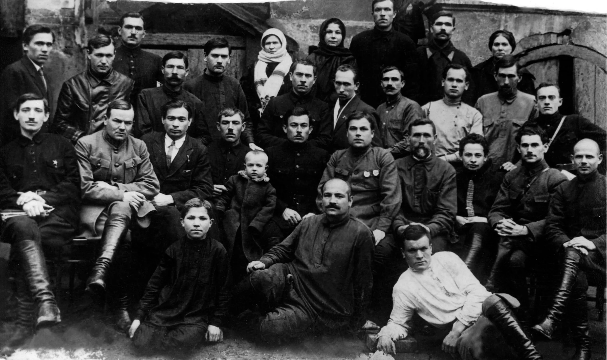
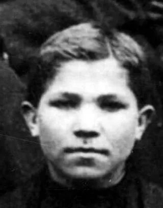
1родина повстанця
ім'я в підписі не назване
Хлопчик сидить на землі в першому ряду. Його батька Польща на початку 1925 року видала Радянському Союзу в обмін на політв'язнів, і того ж року Курач із дружиною й сином уже в Харкові.
ДоляНічого не відомо.
Степанов, с. 147 ·
продовольчий комісар ревкому
Ігнатій, син Федора · за ґміною народився 11.X.1885 (?)
 3
3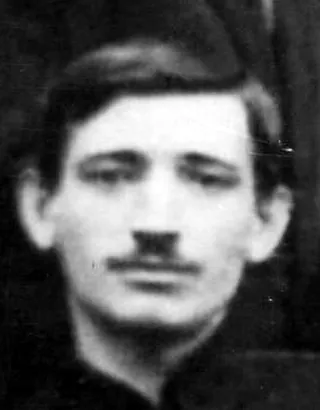
4командир Першого Дубровицького полку
син Якова · за ґміною народився 24.VIII.1896 (?)
 5
5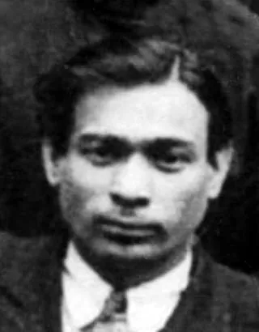
6учасник переговорів із німцями, автор спогадів
О. М. Модек
 7
7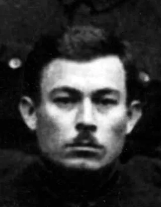
8командир зведеної групи під Воробином
Орлов · син Якова · за ґміною народився 23.I.1888 (?)
 9
9заступник начальника штабу повстання, згодом чекіст
1893 — 1939
 10
10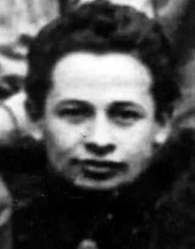
11родина повстанця
ім'я в підписі не назване
Наймолодший на вигляд у другому ряду. Більше про нього джерела нічого не кажуть.
ДоляНічого не відомо.
Степанов, с. 147 ·
член ревкому, командир Сарненської ділянки
Олександр Васильович
 13
13машиніст, комісар Сарненського вузла
у Степанова також Роковський і Раковський
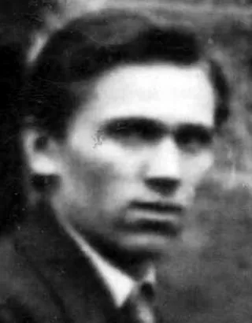
14 15
15комісар Першого Дубровицького полку
справжнє ім'я — Йосип Давидович Заграничний
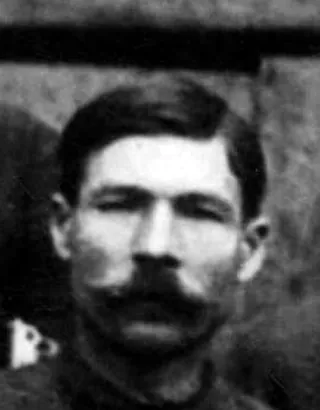
16 17
17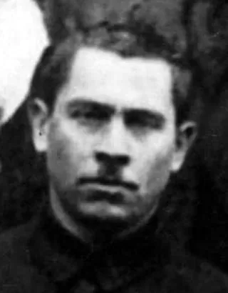
18командир групи під Воробином
син Павла · за ґміною народився 13.X.1891
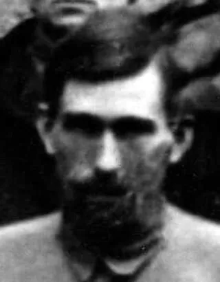
22 23
23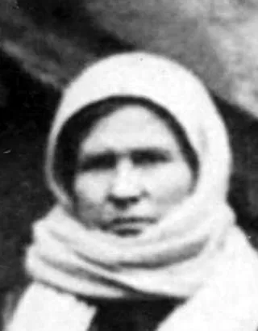
24мати Степана
Ольга Григорівна
Дружина коваля Йосипа, мати Степана, Григорія й Сергія. На світлині — у світлій хустці.
СмертьНе знайдено.
Степанов, с. 147 · презентація ·
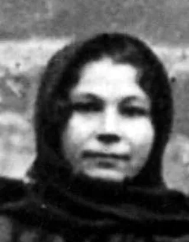
25родина повстанця
ім'я в підписі не назване
Стоїть у верхньому ряду поруч із батьком.
ДоляНічого не відомо.
Степанов, с. 147 ·
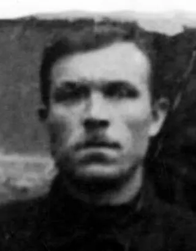
26 27
27підсудний у справі Плятерів
Курач-Заєць · син Данила · із Сельця · близько 1881 року народження
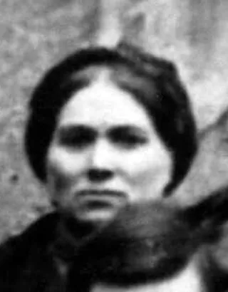
28родина повстанця
ім'я в підписі не назване
Стоїть у верхньому ряду праворуч.
ДоляНічого не відомо.
Степанов, с. 147 ·
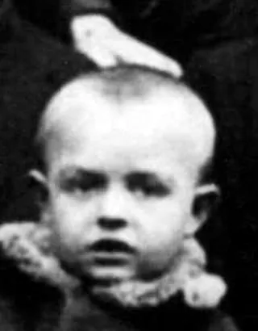
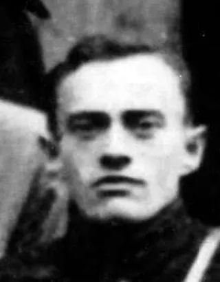
Як розпізнано обличчя. Підпис у книжці Степанова перелічує людей рядами зліва направо, і обличчя зіставлено саме за цим порядком. Перевірка: портрети Степана й Йосипа Лясковців, Федора Рабешка й Миколи Грицюка з презентації вирізано з цієї самої світлини, і вони стоять там, де їх ставить підпис; окремі портрети Миколи, В'ячеслава й Григорія Лясковців та Олександра Модека з музейної добірки теж подібні до облич на своїх місцях. Довідки про людей, яких немає в реєстрі, — за книжкою Л. Степанова.
У Дубровиці були двоє братів-ковалів, Яків і Йосип Григоровичі. Їхні сини опинилися в центрі повстання 1918 року. Степанов називає всіх чотирьох молодших Лясковців «братами». Польські документи точніші: Микола й В'ячеслав — сини Якова, Степан — син Юзефа (Йосипа), тож вони двоюрідні брати. Біографії синів, з тим, що про кожного пишуть польська справа, Степанов, газети й родинна презентація, — у реєстрі учасників (за посиланнями в родоводі); Степанові присвячено окреме досьє в наступному розділі. Тут — тільки батьки, про яких реєстр не пише.
Яків Григоровичковаль
Йосип Григорович1868–1931 · коваль + Ольга Григорівна
батько Миколи й В'ячеслава
Старожили, пише Степанов, пам'ятали братів-ковалів — Якова і Йосипа
, чиї молоти стукотіли з ранку до вечора навіть у свята. В'ячеслав згадував, що батька хотіли вислати за богохульство та агітацію проти попів
. У польській справі він присутній тільки в імені синів: «син Якова».
польською дефензивою був закатований.
Доля. Відомо тільки зі Степанова: закатований польською дефензивою. Коли саме, книжка не каже. Як це узгоджується з порятунком сторінкою раніше, теж не пояснено.
Степанов, с. 6, 8–9, 13, 148–149 · справа, арк. 601 (сини)
дружина Йосипа
Степанов пише, що під час першої підпільної конференції в липні 1918 року саме вона помітила біля хати відомого провокатора. На груповому фото 1925 року в Харкові вона стоїть у четвертому ряду, у світлій хустці. У протоколі допиту 1922 року Степан назвав себе сином Юзефа і Ольги
. Презентація каже про обох батьків: були людьми простими і підтримували ідеї більшовизму, хоч і не були членами більшовицької партії
.
Доля. Невідома.
Арк. 315 · Степанов, с. 49, 147 · презентація · світлина 1925 року
Інші Лясковці в справі. Під проханням за Павла й Миколу Пальонків, підписи на якому ґміна засвідчила в лютому 1920 року, розписалися Степан і Данило Лясковці. Під порукою сусідів за Пальонків у вересні 1919 року стоять підписи Іллі Лясковця й «Степана Я. Лясковця», під громадським «приговором» тих самих днів — Івана й Іллі Лясковців. Хто такі Данило, Ілля й Іван, справа не каже. Чи Степан у цих підписах — Степан Йосипович, сумнівно: підпис 1919 року має ініціал по батькові «Я.» (найпевніше, Якович), а сам Степан Йосипович, за його власними словами 1937 року, 1919–1920 роки провів у Червоній армії. Скаржачись у 1923 році, Степан і сам просив не карати його за злочини, вчинені іншими Лясковцями
.
Голова ревкому в радянських книжках. «Хлопець 17 років» у власній скарзі з в'язниці. Обвинувачений, якого польський суд виправдав за браком доказів. Політемігрант, студент, журналіст, офіцер, розстріляний 1937 року. Про Степана Лясковця пишуть польська кримінальна справа, книжка Степанова, районна газета й родинна презентація, і майже в жодній деталі вони не збігаються. Тут зібрано все, що про нього є в наших джерелах: хто і як його описував, де свідчення розходяться і що кожне джерело каже про його смерть, а що замовчує.
Протокол допиту обвинуваченого · Луцьк · слідчий суддя I ревіру Луцького повіту
Цього дня я перебував цілий день у Дубровиці, вдома в батьків. До фільварку Мочулище я того дня не ходив. Більше сказати нічого не можу.
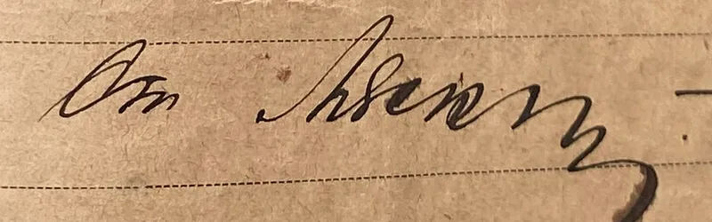
Зірка на грудях. Прикмету він назвав сам: так заповнювали графу «особливі прикмети». Слово перед gwiazdy заходить у згин аркуша, і впевнено його не прочитати, але це, найімовірніше, татуювання. Зірка одна, а не дві, як подавали раніше. Яка саме, п'ятикутна чи ні, протокол не каже. Проте зірка на грудях у 1922 році, в людини, що два роки провела в Червоній армії, найвірогідніше означала саме червону армійську зірку. Це знак, від якого не відмовишся на допиті, як від слів. Авторка родинної презентації згодом назве його фанатичним більшовиком
.
Що він сказав неправду. У графі «військова служба» записано «не служив». Але Шеремета ще в серпні 1921 року розповів поліції, що Степан повернувся до Дубровиці разом із ним із Червоної армії. А 1937 року на допиті в НКВС Степан сам розповідав про Таращанську бригаду й посаду воєнкома бронепоїздів № 96 «Червоний ураган» і № 104. Через рік, у скарзі з в'язниці, він назве себе хлопцем 17 років
на час нападу. Насправді в листопаді 1918 року йому було дев'ятнадцять.
Неписьменний? «Два класи народної школи» і польською читати не вмію
(1923). Підписувався він упевнено, кирилицею «Ст. Лясковец», а повістку до суду 1923 року підписав латинкою, «S Laskowiec». За дев'ять років по тому він закінчить факультет журналістики Комуністичного університету в Харкові.
Того ж дня. Слідчий суддя обрав йому запобіжний захід: арешт (арк. 313). Під постановою Степан розписався кирилицею. Того ж 27 січня допитали й Шеремету, і той сказав: Степана Лясковця я тоді не знав
, хоча за п'ять місяців до того, у поліції, називав його одним з організаторів «банди».
Джерела в тому порядку, в якому їх писали. Позначка показує, чий це голос.
Колишній судовий слідчий Бердников (1919–1920) докладно описує ревком і трибунал, але з Лясковців називає тільки Миколу. Розшукова відомість Дубровицької ґміни 1920 року Степана теж не містить. Колишній начальник міліції Мацкевич 1922 року пише про «братів Лясковців», але організатором знає одного, Миколу: Лясковець був ще раніше головним організатором підготовки того нападу
.
Року 1918 у місяці листопаді пішов я добровольцем до банди, котра організована була в Дубровиці Садовським і Миколою та Степаном Лясковцями.
Шеремета розповідає, що в червні 1921 року повернувся з Червоної армії разом зі Степаном, Пилипом Лосем, Романом Дубинцем та іншими як «делегатами» ЦК з Києва, щоб організовувати повстанські загони проти польської влади, і що вони отримали великі суми в царських рублях і марках. Табір — на болоті «Козаки».
арк. 323–324
Шеремета показав місце табору й просив узяти його провідником, але щоб він не втік, нічну облаву зробили без нього, і під час неї зловили Лясковців та інших
. На болоті, за словами Щеньовського, були Лясковці — батько й син
, тобто Йосип і Степан. На суді 1923 року поліцейський додав, що Шеремета називав серед нападників на Воробин Лясковців: Миколая, В'ячеслава, і, здається, говорив про Лясковців: батька та сина
.
арк. 376; протокол суду, арк. 119
1922 року єдиний вартовий, що бачив облогу зсередини, назвав серед нападників, крім Шеремети, Лясковця, імені якого не знаю
. На суді він уточнив: Пред'явленого мені обвинуваченого Лясковця я в натовпі не бачив, а тільки чув, лежачи пораненим у лікарні, що якийсь Лясковець брав участь у нападі
.
…ніхто б мене не допустив до керівництва повстанням та не став би слухати, а я взагалі не мав жодного уявлення про вогнепальну зброю.
Степан просить нового слідства: обвинувального акта йому не прочитали, а сам я польською читати не вмію
. Повстанням, пише він, керували Микола Лясковець і Олександр Садовський, і на це вказав сам Мацкевич. Свідка, що бачив би його у Воробині, він просить поставити перед ним, бо тоді я не був настільки популярним, аби мене всі знали
. І наостанок: не маю жодного наміру нести наслідки відповідальності за злочини, вчинені іншими Лясковцями
. В'язниця переслала скаргу до суду як скаргу в'язня у справі «ЗАКОРДОТ»
.
арк. 40
На всі три питання про Степана (участь у збіговиську, вбивство Плятерів, вбивство службовців і вартових) суд відповів Ні, не винен
. У вироку сказано, що його та Степана Будкевича з огляду на брак будь-яких доказів належить виправдати
. Ув'язнення він не уникнув: у справі «Закордоту» його засудили до десяти років.
арк. 122–129
Незважаючи на передвиборну атаку всіх угодовських партій, робітничий клас і селянство залишилися непорушними захисниками диктатури пролетаріату… Дубровиця стала розсадником більшовизму на Поліссі.
Єдині слова самого Степана з радянського боку. Їх наводить Степанов (с. 20) із його спогадів у Рівненському партархіві (ПАРО, ф. 4149, оп. 1, спр. 5, арк. 79). Коли ці спогади написано, книжка не каже. Можливо, у Харкові 1925–1934 років, де колишні повстанці, як пише Степанов (с. 150), готували книжку про повстання.
У рік реабілітації Степана, до 40-річчя повстання, «Червоний прапор» друкує короткий спогад Федора Пирішка, де жодного ватажка не названо. 1963 року «Радянська Україна» в нарисі «До сердець промовляє історія» називає ватажком Миколу Лясковця. Степана немає в жодному з цих текстів.
Модек, Борко-Бруяка, Сушко, Пирішко й Лосик згадують його лише раз: серед членів Військової ради повстанських військ Західної України й Білорусії. Головою ревкому його тут не названо, а по батькові подано «І.»
понад 1600 повстанців
закінчив інститут, працював журналістом
Штурм Воробина Степанов описує, але Степана з ним не пов'язує. Що Степана судили саме за Воробин і що суд його виправдав, у книжці не сказано: єдиний процес, який там згадано, — «справа Закордота».
До 50-річчя повстання в Дубровиці відкрито музейну експозицію про ватажків О. М. Ільїна, С. І. Лясковця, О. В. Конончука, М. І. Грицюка-Антонова та інших комуністів-ленінців
. Двоє з чотирьох, Лясковець і Грицюк-Антонов, загинули в репресіях 1930-х років. Газета про це не пише.
Короткий переказ Степанова до 65-річчя. Головою ревкому Степан тут уже без варіантів. Уперше в районній газеті його портрет з підписом «С. Й. Лясковець», поруч з Ільїним і прапором Першого Дубровицького полку.
Перший у переліку героїв повстання, перед Борком-Бруякою, Грицюком-Антоновим і Камінським.
Найдокладніший життєпис, складений за родинними паперами, протоколом допиту в НКВС 1937 року та збірником документів про «Закордот» (2000). Тут є все, чого бракує іншим: служба в Таращанській бригаді Боженка й на бронепоїздах; «Закордот» через двоюрідного брата Миколу; група з двадцяти осіб, переправлена через кордон; арешт 24 серпня 1921 року з револьвером «Steyr», кулеметною стрічкою й картою Сарненського району; десять років тюрми; Білосток; обмін; Комуністичний університет; політскладу РСЧА; і кінець 1937 року. Авторка підсумовує: син бідного коваля з провінційного містечка, фанатичний більшовик, боєць Червоної армії, розвідник-нелегал, офіцер політскладу РСЧА, полковник, військовий журналіст
.
| Питання | Польська справа | Радянські тексти | Презентація |
|---|---|---|---|
| Рік народження | 22 роки в січні 1922-го, тобто 1899; сам у скарзі: «хлопець 17 років» у 1918-му, тобто близько 1901 | не подано | 22.III.1899 під портретом; 1898 у тексті |
| По батькові | син Юзефа (Йосипа) і Ольги | «С. І.» у 1967 і в «Правді» 1968; «С. Я.» у Степанова (с. 40, 150); «С. Й.» у «Поліському маяку» 1983 і 1985 | Йосипович |
| Ким доводився Миколі й В'ячеславу | «брати Лясковці» в Мацкевича й у проєкті обвинувачення 1921 року; але Степан — син Юзефа, а Микола — син Якова, тобто двоюрідні | «брат» у Степанова (с. 9, 12), а на с. 147–150 — син Йосипа, тобто двоюрідний | двоюрідний брат |
| Роль у листопаді 1918 | свідки 1919–1920 його не згадують; Шеремета 1921: співорганізатор «банди»; сам: «ніхто б мене не допустив до керівництва»; суд: доказів немає | голова ревкому й член трибуналу (Степанов, «Поліський маяк» 1983, 1985); у 1967 — лише член Військової ради | голова ревкому |
| Військова служба | «не служив» (анкета 1922); повернувся з Червоної армії (Шеремета 1921) | 1919: Рівненська повітова ЧК (Степанов, с. 147) | з літа 1919 політпрацівник Таращанської бригади, воєнком бронепоїздів № 96 і № 104 |
| Як його схопили 1921 року | нічна облава на болоті «Козаки» після зізнання Шеремети | з батьком поранені в бою й схоплені (Степанов, с. 149) | облава 24.VIII.1921 начальника таємної поліції в Сарнах Романа Ленковського |
| Освіта | два класи; «польською читати не вмію» | «закінчив інститут, працював журналістом» | факультет журналістики Харківського комуніверситету імені Артема, 1928–1931 |
Останній слід — 1923 рік: виправдальний вирок у справі Плятерів і в'язниця «у справі «ЗАКОРДОТ»».
Лише ініціали «С. І.» серед членів Військової ради. Ні дат життя, ні долі.
Книжка вийшла через десять років після реабілітації. Про Степана сказано: закінчив інститут, працював журналістом
. У тому самому абзаці перелічено кар'єри інших повстанців, серед них Миколи Єфімова, ректора Київського політехнічного. Що Єфімова розстріляли того самого 1937 року, книжка теж не каже.
«Ватажок» і «комуніст-ленінець», без жодної дати.
«Голова ревкому», портрет. Про 1937 рік ні слова.
На час арешту 1937 року Степан був начальником партвідділу окружної газети «Червоний воїн» Закавказького військового округу (у презентації — «Зак. ВО»). Справу проти нього відкрили в січні–лютому 1937 року за наклепом
, слідство тягнулося сім місяців. Він писав скарги аж до Маленкова, завідувача ОРПО ЦК ВКП(б). Потім вийшов наказ НКВС № 00485 (11 серпня 1937 року) про «польську операцію». Його четверта категорія — політемігранти і політобмінені з Польщі
— точно описувала Степана. Він був заарештований і розстріляний.
Розстріляли й брата Сергія. Серед репресованих учасників повстання презентація називає також В'ячеслава Лясковця, Грицюка-Антонова, Козубовського і Єремію Шеремету. Реабілітований 1958 року.
Точної дати арешту, вироку й розстрілу, як і місця поховання, немає в жодному з наших джерел. Радянські тексти, які писали про Степана після 1958 року, знали, що він реабілітований, тобто знали, що його розстріляли, і жоден цього не написав.
ДАРО, ф. 32, оп. 28, спр. 904, арк. 40, 119, 122–129, 312–316, 323–324, 376, 395–397, 401–402, 563–564, 601 · Л. С. Степанов, «Безсмертя батьків», Львів, 1968 · «Червоний прапор», 23.XI.1958 · «Радянська Україна», 4.XII.1963 · «Поліський маяк», 1967; 6.XII.1983; 5.XII.1985 · «Правда», 4.XII.1968 · Презентація про С. Й. Лясковця (родинний архів) ·
Картки з позначкою «лише в радянській книжці» спираються тільки на «Безсмертя батьків» Лева Степанова (1968). Про кар'єри колишніх повстанців ця книжка пише охоче, а про розстріли 1937 року мовчить. Решту взято зі справи, тюремних документів, газет і презентації про Степана Лясковця.
Після того як 23 травня Червона армія взяла Рівне, Микола й Григорій Лясковці та Микола Єфімов працювали в ревкомі, а Степан і В'ячеслав Лясковці, Дмитро Будкевич, Олександр Модек та Арвід Скуїн — у повітовій ЧК.
Степанов, с. 146–147
Степанов пише, що старого коваля Якова Лясковця, батька Миколи й В'ячеслава, закатувала польська дефензива. Олександр Кренько, рятуючись від арешту, виїхав до Аргентини, а Микола Євчук, якому 1918 року було п'ятнадцять, очолив у Дубровиці підпільний райком КПЗБ.
Степанов, с. 149–150
12 вересня Пирішка, Харківця й Дем'янця випустили з Ковельської в'язниці. Нашора ще з тюрми звинувачував свідків Свириденка й Литвинчука, але поліція визнала це наклепом.
Арк. 234, 247–250; Апеляційний суд, 15.X.1923, арк. 251
10 серпня Іван Москальчук-Нашора помер від сухот у тюремному шпиталі Луцької в'язниці, не відбувши й половини строку. Справу щодо нього закрили. За рік до того він просив видати його Радянській Росії, але прокурор відмовив: Нашора не був її підданим.
Прокуратура, 26.VIII.1924, арк. 252 ; тюремна справа, ф. 47, оп. 4, спр. 62
30 січня Гаврила Курача-Зайця випустили з в'язниці в Білостоці й передали Змішаній комісії для обміну політв'язнями з СРСР. На початку того ж року до СРСР обміняли й Степана Лясковця, який сидів у Білостоцькій тюрмі. 11 вересня окружний суд у Рівному затвердив подання прокуратури зупинити виконання кари Курача-Зайця.
Прокуратура, 18.III.1925, арк. 253; ухвала 11.IX.1925, арк. 255; презентація
З ініціативи Інституту історії партії колишні повстанці зібралися в Харкові, тодішній столиці радянської України. На світлині — Лясковці з батьками, Гнат Нашора, Модек, Будкевич, Конончуки, а також Гаврило Курач із дружиною, якого Польща того ж року видала в обмін на політв'язнів. За пропозицією Горького вони взялися писати книгу про повстання; до війни вона так і не вийшла.
Степанов, с. 5, 147, 150 · світлина й довідки на кожного
Микола Лясковець став інженером і будував залізниці, Микола Єфімов очолював Харківський механіко-машинобудівний, а згодом Київський політехнічний інститут. Федір Козубовський, командир Другого Поліського полку, керував Інститутом матеріальної культури, Модек викладав у військовій академії імені Фрунзе, Олександр Конончук служив у Генштабі, Островський — у прокуратурі СРСР. В'ячеслав Лясковець і Борко-Бруяка стали чекістами.
Степанов, с. 150–151
Степана Лясковця заарештовано й розстріляно; радянські книжки й газети про це так і не написали (досьє). 28 березня того ж року розстріляли Миколу Єфімова, колишнього комісара Першого Дубровицького полку й ректора КПІ, а 23 лютого 1939 року — Миколу Грицюка-Антонова, колишнього начальника тюремного відділу НКВС СРСР.
Презентація · КПІ · довідка про кадри НКВС · довідки до світлини 1925 року
Теодора Пирішка засудили знову: 6 червня 1939 року Варшавський окружний суд дав «комуністові Теодору Пирішку» 10 років ув'язнення. Газета писала, що він був членом ЦК Комуністичної партії Західної Білорусі, його затримали при спробі втекти до СРСР, а 1918 року він входив до «банди», що спалила Воробин. Перед процесом прокуратура запитувала з Луцька вироки 1923 року на «Теодора Пирішка, сина Бориса та Єви, 1898 р. н.».
«Freie Presse», червень 1939 · арк. 287
Олександр Кренько з Аргентини поїхав воювати в Іспанію комісаром кулеметної роти. У липні 1941 року його з групою колишніх дубровицьких повстанців скинули з літака на парашутах біля Дубровиці. Він створив одну з перших підпільних організацій на Рівненщині, разом із ним діяли доньки Марія й Олімпіада. У липні 1943 року Кренька вбили; Степанов пише, що це зробив агент українських націоналістів.
Степанов, с. 150–151
Степана Лясковця й Миколу Єфімова посмертно реабілітовано. «Червоний прапор» друкує спогад «Ф. Пирішка, учасника повстання, члена КПРС з 1924 р.»; Федором слідство називало й Теодора Пирішка.
До 50-річчя повстання Лев Степанов видав у Львові «Безсмертя батьків», а «Поліський маяк» надрукував портрети учасників. У книжці немає розстрілу полонених без суду, страт ревтрибуналу й арештів 1937 року, зате зібрано багато імен рядових повстанців.
Вісімдесятитрирічна Ірина Пирішко, сестра Федора, згадала в районній газеті, як перев'язувала поранених під Воробином: Уже в перший день до лазарету прибуло більше десяти поранених
. 1926 року її саму заарештували й засудили на шість років за належність до КПЗБ; строк вона відбувала в Рівненській, Луцькій і Фордонській тюрмах.
21–22 листопада 1918; книга хворих лікарні — 22 листопада. Прокурор 1922 року ще сумнівався, чи не з 22 на 23-тє, і фельдшер Пальонка підтвердив: злочин було вчинено саме вдень 22 листопада
. Постанова 5.VI.1920 прямо називає 22 листопада днем нападу на Воробин
. Частина свідків зсуває все на добу: Мольський (лютий і травень 1920, серпень 1922) і вартовий Буйновський кажуть про ніч з 22 на 23 листопада, Свириденко 1920 року — у ніч на 23 листопада
, а 1922-го — у п'ятницю 23 листопада
, хоча п'ятницею було 22-ге. Суд і слідство прийняли 21–22 листопада.
«Київська Думка» 27.XI.1918 і спогади учасників — так само. Стаття «Поліське повстання» і презентація — 3–6 грудня. Спогади О. Модека, П. Борка-Бруяки, Й. Сушка, І. Пирішка й П. Лосика (журнал «Жовтень», 1967, № 7; передрук у районній газеті) і «Поліський маяк» 1978 року — штурм 4 грудня.
Перевірка: Сибіковський не пам'ятав числа, але назвав ніч «з четверга на п'ятницю»; Радванський — «у четвер»; Свириденко — «у п'ятницю» (хоча й назвав її 23 листопада). 21 листопада 1918 року справді четвер.
Близько 22:00 (обвинувальний акт; Ліпінський у переказі апеляційного вироку; Калінський на суді); близько 23:00 (Буйновський, 1920); близько півночі (Свириденко, 1920; Калінський, 1922); о 1–2-й (Мольський, 1922); близько 2-ї (Свириденко на суді); Ліпінський 1922: «приблизно о 10-й годині», уночі.
Загони рушили опівночі («Красная звезда», 1927); о 10-й вечора захопили варту в містечку, о 12-й почали наступ (Ф. Пирішко, 1958).
Будинок горів, набої скінчилися (Ліпінський); пообіцяли, що їх лише заарештують і що буде суд
(Буйновський); кулемет зіпсувався на початку бою (Латта, Галушкевич).
Обложеним пообіцяли, що їх відпустять (спогади Вітольда Плятера). Повстанці обклали кам'яний двоповерховий будинок соломою й підпалили, дим змусив оборонців капітулювати (Модек та ін., 1967); першими вийшли з кам'яниці з піднятими руками брати Антон і Гнат Плятери
(«Поліський маяк», 14.XI.1967).
Капітуляція близько 16:00, розстріл близько 17:00 (Ліпінський); розстріл між 14:00 і 15:00 (Мольський, Калінський, Свириденко, Литвинчук); стрілянина до 15:00 (Буйновський), до пополудня (Галушкевич).
До 17:00, «17-годинний бій» («Красная звезда»); «бій тривав 18 годин» (Пирішко); оборона «до другої години дня» (спогади Вітольда Плятера).
Брати Плятери, повірений, службовці й варта з 16 чоловік під командою Кальтенберга з Рівного; у будинку — «двадцять з гаком» (Ліпінський); кулемет.
«60 офіцерів плюс 15 осіб озброєної прислуги» («Красная звезда»); «каральний гайдамацький загін на чолі з катом Кальтенбергом» (Пирішко, 1958); «воробинський загін гайдамаків, що налічував близько 180 чоловік» (Модек та ін., 1967).
Полк німецької артилерії у Воробині пропустив селян (Ліпінський); зброю нападникам дали німці (Шеремета). Свідок Мосейчук: німці в Дубровиці відбирали зброю в населення.
Німецька рада солдатських депутатів допомогла повстанцям і зберегла нейтралітет («Красная звезда»). Офіцери німецького гарнізону у Воробині вмовляли своїх солдатів виступити на боці гетьманців, але ті відмовилися (Модек та ін., 1967).
«Численні натовпи селян»; «пару тисяч» (Бердников, з чуток); «кілька тисяч» (Більчинська, Латта, Мольський-молодший, староста Іванджук). У загоні через Мочулище — близько сорока.
Близько 350 осіб («Красная звезда»); «до двох тисяч» («Київська Думка»).
Дванадцять поранених у книзі хворих лікарні; троє вбитих нападників поховали на цвинтарі (Радванський); Пшедзимирський устиг убити одного (так, переказували Радванський і Свириденко, хвалився Нашора).
4 убиті й 17 поранених («Красная звезда»); загинули Стефан Мартинчук, Іван Адамчук і двоє братів Слобеди (Пирішко); загинули Степан Мартинчик та Іван Адамчук, сімнадцятьох поранено (Модек та ін., 1967); в перший день боїв у лікарню доставили з-під Воробино 15 поранених
(«Поліський маяк», 3.XII.1968); «більше десяти» (санітарка Ірина Пирішко, 1983).
21 розстріляний і ветеринар Росін — 22 (обвинувальний акт); двоє графів, дев'ятеро службовців і десять вартових (Вев'юровський, 1920); 21 тіло в дворі палацу (Свириденко); 19 тіл в одній могилі й ще двоє — повірений і ветеринар Росін — у другій, тобто 21 (Мольський, 1922).
Графи й «8 чоловік варти» («Київська Думка»); 22 чоловіки (спогади Вітольда Плятера).
Вивели на вулицю, вишикували в шеренгу й розстріляли; тіла лежали в дворі палацу (Ліпінський, Свириденко). Мітлюх, 1919: службовців розстріляли на площі, а графів відвели вбік на дорогу і там окремо
; поховали у спільній могилі при дорозі
(Галушкевич).
«На дорозі до Дубровиці», після того як обложеним пообіцяли, що їх відпустять (спогади Вітольда Плятера).
Застрелили на бігу, коли намагався втекти, хто — не розгледів (Ліпінський); тіло лежало під кущем ще до розстрілу графів, хто вбив — не знає (Сибіковський). Нашора хвалився, що це він (Радванський, Свириденко; Мольський-молодший — з їхніх слів); Сибіковський благав Нашору не стріляти (Литвинчук, зі слів Сибіковського, який цього не підтвердив). Сам Нашора заперечував і казав, що Свириденко свідчив зі злості. Суди визнали вбивцею Нашору.
—
Ревком: Микола Лясковець — «головний ватажок», Олександр Садовський — воєнком (ґміна, Бердников). Біля палацу: Садовський командував розстрілом (Шеремета); Олександр Конончук поставив долю полонених на голосування (Сибіковський); Василь Конончук — «комендант нападу» (Михайло Конончук, син Самуїла, 1921). У Мочулищі: Мольський 1920 року спершу назвав Будкевича, потім Петрушка; Мозоль сам себе називав комендантом. Апеляційний вирок пише «Микола Садовський».
Командувач загонів — «тов. Конончук А.» («Красная звезда»); Степан Лясковець — голова ревкому (презентація). Командир 1-го Дубровицького комуністичного полку — Микола Лясковець, начальник штабу — Олександр Садовський, голова Військової ради — О. М. Ільїн, присланий із Москви (Модек та ін., 1967); голова військревкому — Олександр Конончук («Поліський маяк», 3.XII.1968).
22 роки на допиті 27.I.1922; затриманий під час нічної облави на «Козаках» у серпні 1921 (Щеньовський). Сам писав, що 1918-го був «хлопцем 17 років».
Народився 22.III.1899 (у переліку дітей — 1898); заарештований у ніч на 24.VIII.1921 на «Козаках» (презентація).
Протоколи справи й презентація тут збігаються: Лясковцеві 1918 року було 19, а затримали його в серпні 1921 у справі «Закордот».
Поліція Дубровиці сама собі суперечить. 20.II.1921: Олександр Правник і Федір Будкевич пішли до царського війська й не повернулися, Сергій Будкевич поїхав до Корця, Рабешко ковалює в Білій Криниці, Василь Конончук убитий петлюрівцями в березні 1919-го. 13.V.1921: Правник, Федір Будкевич, Рабешко й Василь Конончук «втекли з більшовиками», Сергій Будкевич переховується. У Білій Криниці Рабешка ніхто не знав.
Рабешко 1925 року — на світлині в Харкові; Василь Конончук у Степанова — серед загиблих у березні 1919-го.
17 років у книзі хворих 22.XI.1918; «не було повних 16 років» (батько й шваґер, 1921); 17 років (ухвала громади Колок, 1921); 18 років (допит 1.III.1921).
«Мені було лише 14 років» (апеляція Харківця) — так записав і апеляційний суд.
Усі сфотографовані аркуші справи № 67/22 з Державного архіву Рівненської області, зібрані в документи, — кожен зі сканом і перекладом, звіреним з оригіналом. Шукайте за словом (пошук іде й по тексту перекладів), фільтруйте за типом, особою чи роком. Відкрийте документ: ліворуч скан (натисніть, щоб збільшити), праворуч переклад.
147 з 147 документів
Нічого не знайдено. Спробуйте інше слово або скиньте фільтри.